The analysis
software is organized in 7 basic units: Data (management), View (2-D visualization and Data properties), Basic Handling, (Advanced) Filtering,
Imaging, Modelling and 3-D Utilities (3-D
visualization). Each
unit comprises a number of homologous task groups. Each task may require one or
more functions to perform.
1. I/O and Flow Control: The
'Data' Menu
Hold
Processed Data / Discard Processed Data
2. Data Visualization and Properties: The
"View" menu
Show Data/ Show Processed Data
Inspect Time-Frequency Spectra.
3. Basic Processing: The "Basic Handling"
menu
Resample Time Axis / Resample Scan Axis
Import/Replace Positioning Data.
4. Advanced Processing: The "Filtering" menu
Multi-Directional Wavelet Filter
5. Interpretation I: The "Imaging" menu
2-D Phase-shift + Interpolation Migration
2-D Split-step Fourier Migration
6. Interpretation II: The "Modelling" menu
3. The structure of the Model File.
7. Interpretation III: The "3-D Utilities"
menu
1. I/O and Flow Control: The 'Data' Menu
Import Raw Data
In matGPR, the term Raw Data
defines data sets that exist in the GPR manufacturers native storage format
and prior to their importation
/conversion to the matGPR data structure format.
·
matGPR can import raw
data in the native formats of the GPR manufacturers:
1) GSSI (*.DZT files); these include
8/16-bit data collected with models up to SIR-3000 and 16/32-bit data collected
with model SIR-4000.
2) Måla Geophysics (RAMAC) including
16-bit data stored in *.RD3 files and 32-bit data stored in *.RD7 files.
3) Sensors and Software (PULSE EKKO / DT1)
and,
4) ZOND (SEG-Y). Only single-channel data files are acceptable, inasmuch as matGPR
is currently being offered for zero- or single-offset surveys.
5) Data stored in Seismic Unix (SU) and SEG-Y Revision 0 and Revision 1 formats. See Section 2.4 of the MATGPR
Manual and Technical Reference for details on the
implementation of the SEG-Y and SU standards
·
With reference to RAMAC RD3 or RD7 data, it is
possible to import and assimilate GPS trace positioning, if available, by
decoding the associated .cor file
where GPS information is stored. The positions of the GPS-located traces are
projected in the UTM coordinate system and are treated as marker traces:
they are stored in the IPD.markertr field whence they can be manipulated in various ways.
·
With reference to bistatic Pulse Ekko (DT1) radars,
note that only data recorded in reflection mode (single-offset)
are fully supported. Multiple-offset data, (e.g. CMP gathers) can be imported
and displayed, but at this stage of development, matGPR does not offer any
processing utilities beyond rudimentary editing and filtering.
Once read, the data
may be automatically saved in the matGPR-specific MGP-file binary format
(default) or in MATLABs native MAT-file binary format for faster and easier
subsequent access. When saving after reading, the destination directory of the
MGP- or MAT-file is the parent directory of the raw data file and the saved
file name is simply the raw data file name with the extension .mgp or .mat appended. For example, if the raw data file testdata.dzt
is imported, the resulting IPD will be saved in the MGP-file testdata.dzt.mgp. Likewise, trench.su may beget trench.su.mat.
After a file is
read, all subsequent input and output
operations will be directed to the parent directory of the raw data file, which
thus becomes the home directory of
the data analysis session. The home directory can change only by importing data
from a different directory. For additional information please refer to the Save to MGP or MAT-file item.
View Header Information
Prior to importing
any raw data and at any time during a matGPR session, you can inspect the
complete information held in the file header of any one of the supported data
formats. Figure 1.1 shows the Header Information window generated by matGPR for
a single channel RADAN / DZT data file.
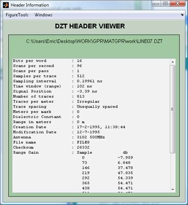
Figure 1.1. The Header Information Viewer
window for RADAN / DZT data.
Import from MGP or MAT-file
matGPR saves the
Input Data Structure (IPD), either in the native MGP-file format (default), or
in MATLAB binary format (native MAT-file), for fast and easy access during
subsequent analysis sessions. A save operation is done automatically, right
after importation of a raw data file. In addition, the IPD can be saved to an
MGP- or MAT-file at any time during a processing session. All these data sets
are imported using the Data à Import
from MGP or MAT file option. See also the Save
to MGP or MAT-file item for additional information.
Concatenate Sections
Consecutive or
broken GPR sections can be joined into a single data set using this menu
option. All data sets must be in one of the matGPR native formats, i.e. MGP,
MAT or both, and have the same number of samples per trace (IPD.ns), the same
sampling rate (IPD.dt) and the same trace spacing (IPD.dx). The first two
conditions also apply to unequally spaced data, i.e. those taken with
instruments without survey wheels, or prior to their transformation to equally-spaced
data (IPD.dx is empty). Marker trace information is preserved during
concatenation. When selected, matGPR generates
the window of Figure 1.2, to assemble the files for concatenation. This can be
done either by typing full path names, or by using the file browser (Browse button). Files can be moved out of the
list by selecting and clicking of the Remove from list button. The GO
button starts the concatenation procedure, which generates a new IPD structure
that can be saved or manipulated at will.
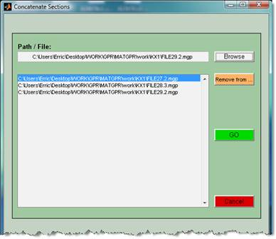
Figure 1.2. The "Concatenate Files" GUI
Hold Processed Data / Discard Processed Data
The Current Input Data and the Output Data rotate during a processing
session as follows:
1)
The Current
Input Data structure is copied onto a blank Output Data structure.
2)
Output Data structure is
modified by application of some processing step.
3)
If the result is acceptable, the Output Data structure is copied onto the Current Input Data. This is done by selecting Data à Hold
Processed Data.
4)
If the result is not acceptable you may discard the Output Data structure using the Data à Discard
Processed Data choice, otherwise it will be automatically erased, upon application of
another processing step.
Undo / Restore.
It is possible to
undo a number of processing steps in order to restore the data to a previous
state. Selecting this menu item invokes a GUI as in Figure 1.3, which displays
the processing history of the current data set during the current session. You may specify any stage during the
displayed processing history, to which the data will be restored. In the
example of Figure 1.3, the data will be restored to the state just after
removing the global background. The number of undo levels, i.e. the number of processing steps you may undo can be
changed during runtime (see Settings for details).
Theoretically, theres no limit to the number of undo levels, but because the
previous processing steps are stored in core memory, your computer system will
set a practical limit, which you have to determine on by yourself. The number 4
appears to be a good compromise for Windows XP OS with 2GB of core memory. Note
that processing steps applied and saved prior to the current analysis session
cannot be undone!
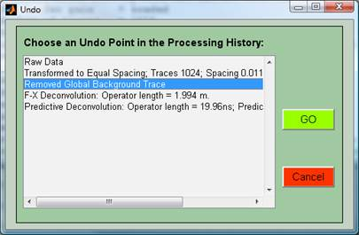
Figure 1.3. The "Undo" GUI. When the Go
button
is pressed, the IPD will be restored to the state specified by the highlighted
step in the data processing history.
Clear Undo Buffer.
Remove previous
processing steps stored in the Undo Buffer to reclaim memory. Once the buffer
is emptied, the counter is reset and the buffer begins to fill from naught.
Save to MGP or MAT file
At any time, you
may save the IPD structure in the matGPR-specific MGP-file format (default), or in MATLABs native MAT-file binary
format, by means of the Data à Save
to MGP or MAT file request.
By default, the
destination (home) directory of the MGP- and MAT-files is the parent directory
of the imported data file. The home directory can change only by importing data
from a different directory (unlike matGPR R.1, where the home directory would
change after a save operation).
The file names
generated during a save operation comprise three parts, e.g. testdata.2.mgp. The 1st part
is the principal file name; by default it is the same as the file name of the
raw data begetting the Current IPD. In the above example, testdata derives from the raw file name testdata.dzt. The 2nd part is an incremental save identifier, indicating the
sequential number of the save operation. In the above example, a save
identifier of 2 indicates that this was the second time the Current IPD was
saved after the data was originally imported from testdata.dzt. This helps in keeping track of the processing history
of a given data set. Third are the default extensions .mgp or .mat. You can
modify any, or both of the first and second parts without consequences. The
saved data sets can be re-imported to matGPR for further manipulation using the Data à Import
from MGP or MAT file option.
 The MGP-file format is the matGPR
default. This was introduced with matGPR Release 2 because at the time, it was considerably more compact than the
MAT-files format. This is no longer true but the format will continue to be the
default for as long as there is matGPR.
The MGP-file format is the matGPR
default. This was introduced with matGPR Release 2 because at the time, it was considerably more compact than the
MAT-files format. This is no longer true but the format will continue to be the
default for as long as there is matGPR.
 The MAT-file format will also continue to be supported
and will be simultaneously available
with the MGP format. You can change the default binary file format from MGP to
MAT through the submenu Data à Settings à Output Binary File à MAT file.
The MAT-file format will also continue to be supported
and will be simultaneously available
with the MGP format. You can change the default binary file format from MGP to
MAT through the submenu Data à Settings à Output Binary File à MAT file.
 Note on the MAT-file format: On start up, matGPR specifies that the MAT-file format
will be the default of the MATLAB version under which it is running. However,
while the MAT-files saved by MATLAB versions 5.x and 6.x are readable by
versions 7.x, the converse is not true because it compresses the data
and uses Unicode character encoding. If for some odd reason you still want your
MAT-files to be readable by earlier versions, you must invoke the Data à Settings à MAT-file Save Format à V.6
option before any saving operation. You can switch back by selecting the
Data à Settings à MAT-file Save Format à V.7 (Default) option. Saving to MATLAB Version 4 Format is altogether
not possible.
Note on the MAT-file format: On start up, matGPR specifies that the MAT-file format
will be the default of the MATLAB version under which it is running. However,
while the MAT-files saved by MATLAB versions 5.x and 6.x are readable by
versions 7.x, the converse is not true because it compresses the data
and uses Unicode character encoding. If for some odd reason you still want your
MAT-files to be readable by earlier versions, you must invoke the Data à Settings à MAT-file Save Format à V.6
option before any saving operation. You can switch back by selecting the
Data à Settings à MAT-file Save Format à V.7 (Default) option. Saving to MATLAB Version 4 Format is altogether
not possible.
Save Depth Migrated Data
Depth migration
marks the end-point of a data processing line. At present, there's practically
nothing more that can be done with matGPR that would be theoretically correct
and would extract meaningful information. Accordingly, depth migrated data can
only be saved to a binary file, for future use (e.g. concatenation or
generation of 3-D volumes), in the form of an IPD structure. Note, however,
that on saving depth migrated data, time parameters, namely the sampling rate
(IPD.dt) and the 2-way traveltime vector (IPD.tt2w) are not preserved. This is important to have in mind when accessing
depth-migrated data sets. Also note that the Processed GPR Data figure can be
saved as a .fig file, using the FigureTools utilities. The .fig format fully preserves the
information displayed in the figure, as well as the data!
Export
For distribution or
exchange, the data can be exported to SU,
SEG-Y Revision 1 and DZT (RADAN) file formats. The exportation
procedure is straightforward and subject to the following limitations:
1. SEG-Y Format Files
 matGPR will export
data in Revision 1 style only.
matGPR will export
data in Revision 1 style only.
 The 3200 byte
textual file header can be only ASCII formatted.
The 3200 byte
textual file header can be only ASCII formatted.
 Extended 3200-byte textual
file headers are not supported.
Extended 3200-byte textual
file headers are not supported.
 The following data
formats are supported:
The following data
formats are supported:
|
Type |
DataSampleFormat |
|
|
1 |
4-Byte IBM Floating Point |
float32 |
|
2 |
4-Byte twos complement Integer |
int32 |
|
3 |
2-Byte twos complement Integer |
int16 |
|
5 |
4-Byte IEEE Floating Point |
float32 |
|
8 |
1-Byte Fixed Point with Gain |
int8 |
 The Type number is
the number that specifies the Data Sample
Format, (see Settings below)
The Type number is
the number that specifies the Data Sample
Format, (see Settings below)
 The default
data sample format is Type 5
(IEEE Floating Point).
The default
data sample format is Type 5
(IEEE Floating Point).
It should be noted
that the SU and SEG-Y formats have achieved widespread usage within the
geophysical community and have become standards, readable by practically all
existing GPR analysis and interpretation software. For this important reason,
these file formats (and SEG-Y in particular), have been adopted as the
preferred method of exporting data for long-term storage and exchange. For
details about the implementation of the SU and SEG-Y standards please refer to Section
2.4 of the MATGPR Manual and Technical
Reference.
2. DZT (RADAN) Format Files
The DZT exportation
utility is still beta and does not include the SIR-3000 and SIR-4000 extensions
of the header block. It also does not
calculate the header checksum setting it to zero. In consequence, you
should expect errors or warnings when
trying to import DZT data created with matGPR into another program. For
instance, the USGS package (Lucius and
Powers, 2002) will declare a corrupt header and abort. Conversely,
REFLEXW will effortlessly import a
DZT file created with matGPR.
Settings
matGPR features a collection
of runtime variables that control certain aspects of program execution, which can
be changed according to your requirements. There are four groups of such
variables:
|
Group |
Submenu |
Choices |
|
Appearance |
Toplevel Background Color Toplevel Foreground Color Analysis Window Background Color Analysis Window Foreground Color Restore Default Colors |
|
|
Output Binary File |
mgp mat |
|
|
2b |
MAT-file Save Format |
v7.3 (Default) v6 |
|
Save after Read |
Always Never |
|
|
Number of undo
levels |
Any reasonable number |
|
|
Byte Ordering |
Set Little Endian Set Big Endian |
|
|
SEG-Y Data Sample Format |
4-byte IBM Floating Point 4-byte Integer, twos complement 2-byte Integer, twos complement 4-byte IEEE Floating Point 1-byte Integer, twos complement |
|
|
Display Mode |
Image Display Wiggle Display Variable Area Display Wiggle + Image Var.Area + Image |
|
|
Design
F or K Filters |
On a test trace or
scanline On the mean trace or
scanline Just type the cutoff
frequencies |
1. Appearance: As of Release 3,
matGPR includes a basic colour customization utility. Your options are:
 Toplevel Background
Color Change the
background of figures related to top level functions
Toplevel Background
Color Change the
background of figures related to top level functions
 Toplevel Foreground Color Change the colour of panels, frames, uicontrols etc. of figures related
to top-level functions.
Toplevel Foreground Color Change the colour of panels, frames, uicontrols etc. of figures related
to top-level functions.
 Analysis Window Background Color Change the background of figures related to
bottom-level (processing and analysis) functions.
Analysis Window Background Color Change the background of figures related to
bottom-level (processing and analysis) functions.
 Analysis Window Foreground Color Change
the colour of panels, frames, uicontrols etc., of figures related to
bottom-level (processing and analysis) functions
Analysis Window Foreground Color Change
the colour of panels, frames, uicontrols etc., of figures related to
bottom-level (processing and analysis) functions
 Restore Default Colors Reset all colours to the original scheme set by the
Author.
Restore Default Colors Reset all colours to the original scheme set by the
Author.
The display method
can be changed through the Data à Settings à Appearance group of options.
2a. Change the default
I/O binary file format. There are two options: The default mgp will cause data to be written in the
specific MGP-file format. The alternative is mat, which will select the
standard MAT-file format. The MGP-file format was introduced with matGPR Release
2 because, at the time, it was considerably
more compact (packed the same information in less than half of the space
required by MAT-files). This is no longer true, but the MGP format will
continue to be supported as the matGPR default. The MAT-file format will continue
to be supported and used simultaneously with MGP; it is useful and
can be very handy, as all MATLAB users can attest to. Thus, you may still save to, or import from
MAT-files as both options are simultaneously
available. You can change the format using the submenu Data à Settings à Output Binary File à
Also see item Save to MGP or MAT-file for additional information.
2b. Control the format of the
MAT-file (the MATLAB native binary file) used in I/O operations. On start up, matGPR
specifies that the MAT-file format will be the default for the version under
which it is running. However, while the MAT-file formats of MATLAB versions 5.x
and 6.x are perfectly readable by version 7.x, the converse is not true! If you
use MATLAB v7.x and want your MAT-files to be readable by earlier versions,
choose Data à Settings à MAT-file Save Format à V.6 before any saving operation. You can switch back to
the default by selecting the Data à Settings à MAT-file Save Format à V.7 (Default) option. If you are using a MATLAB version
earlier than 7.0, this submenu is not available because it is not needed. Also see item Save to MGP or MAT-file for details.
3. Save after Read: After reading in a raw data file, matGPR may automatically save the same data in
the native matGPR binary formats (MGP or MAT) for faster and easier subsequent access. This may be handy when
subsequent operations require native data formats (e.g. concatenation, 3-D
volume generation etc.), but quite often it is not necessary. You can choose
the appropriate course of action using the Data à Settings à Save
after Read à
menu with options:
·
Always : Save after reading to the format
specified by Output Binary File Type.
·
Never : DO
NOT save after reading (default).
4. Determine the number of processing steps you
may undo, in order to restore the data to a previous state. The default value
is 4 and it can be changed interactively. Theoretically, theres no limit to
the number of undo levels, but because the previous processing steps are stored
in core memory, your computer system will set a practical limit, which you have
to determine on your own. The number 4 appears to be a good compromise for
Windows XP OS with 2GB of core memory. For additional information please refer
to the items Undo/Restore and Clear Undo Buffer .
5. Option for exchanging (exporting or importing) data
between little and big endian machines, in particular data in SU
and SEG-Y formats). On start up, the choice is automatically adjusted to the
parameters of the OS in use. During runtime, you can toggle between the big and
little endian options through the Data à Settings à Byte Ordering menu choice.
6. Control the data sample format of data exported in the SEG-Y Revision 1
file format. Default is 4-byte IEEE
Floating Point. See item Export for additional
information.
7. Options to control the mode of data display. Select Data > Settings > Display Mode
and one of:
 Image Display (the
default) ,
Image Display (the
default) ,
 Wiggle Display for simple wiggle-trace presentation,
Wiggle Display for simple wiggle-trace presentation,
 Variable Area
Display for
wiggle-trace variable-area presentation.
Variable Area
Display for
wiggle-trace variable-area presentation.
 Wiggle + Image
Display for combined
wiggle-trace/ image presentation (image under wiggles).
Wiggle + Image
Display for combined
wiggle-trace/ image presentation (image under wiggles).
 Variable Area + Image for combined variable-area/
image presentation (image under wiggles).
Variable Area + Image for combined variable-area/
image presentation (image under wiggles).
 The Image colour scheme can be controlled through the ImageColours menu. The default colour
scheme is 'jet'.
The Image colour scheme can be controlled through the ImageColours menu. The default colour
scheme is 'jet'.
 When in one of the wiggle-trace or wiggle-trace /
variable-area display modes, the amplitude scale of the wiggles and the number
of wiggles to be shown or printed is controlled by means of the slider-rule
interfaces attached to the data display figures (also see the View Data).
When in one of the wiggle-trace or wiggle-trace /
variable-area display modes, the amplitude scale of the wiggles and the number
of wiggles to be shown or printed is controlled by means of the slider-rule
interfaces attached to the data display figures (also see the View Data).
8. Options to control
the way in which you wish to design frequency or wavenumber filters. Select Data à Settings
à Design F or K Filters and one of the three choices:
 On a
test trace or scanline : The
filter will be designed on the basis of the spectrum of a particular test trace
that you will be asked to specify. This is the default.
On a
test trace or scanline : The
filter will be designed on the basis of the spectrum of a particular test trace
that you will be asked to specify. This is the default.
 One
the mean trace or scanline : The filter
will be designed on the basis of the spectrum of the average (mean) trace.
One
the mean trace or scanline : The filter
will be designed on the basis of the spectrum of the average (mean) trace.
 Just
type the cutoff frequencies: The filter parameters will be given through an
appropriate dialog box.
Just
type the cutoff frequencies: The filter parameters will be given through an
appropriate dialog box.
For additional information see
the FIR Frequency Filter and FIR Wavenumber Filter items.
2. Data Visualization and Properties: The
"View" menu
Show Data/ Show
Processed Data
Display the Current
Input Data and the Output Data respectively, according to the
choices made with the Data à Settings à
Display Mode options. The GPR Data figure is created automatically whenever
a new data set is imported or loaded and is updated whenever a processed data
set is held (i.e. when the Output Data replaces
the Current Input Data ). It can also
be refreshed through the View à View Data choice at any time. The Processed
GPR Data figure is created whenever a processing step is taken, in
order to display the Output Data, and
is destroyed when the Output Data is
held, discarded, or another processing step is taken.
 The colour scheme
can be changed by means of the ImageColours menu.
The colour scheme
can be changed by means of the ImageColours menu.
Figure 2.1 shows the matGPR GUI together with
the Data and Processed Data figures in image display mode. Figure 2.2 shows the
GPR Data in wiggle-trace display mode. The vertical slider-rule GUIs facilitate
changing the scale of the wiggles (Scale) and
the number of traces shown (# Traces). Figure
2.3 shows the IPD data in variable-area display mode and Figure 2.4 in combined
wiggle-trace / image display mode. The slider rules again serve the purpose of
adjusting the scale and number of traces shown.
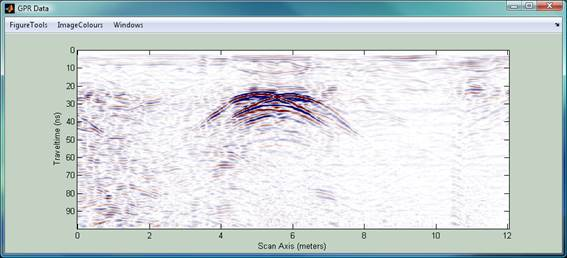
Figure 2.1. The "GPR Data"
figure presenting the radargram contained in the Current Input Data and in 'image' display mode. The Output Data is displayed by an identical
figure.
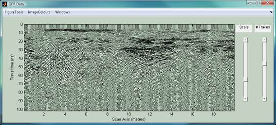
Figure 2.2. The "GPR Data"
figure in wiggle-trace display mode.
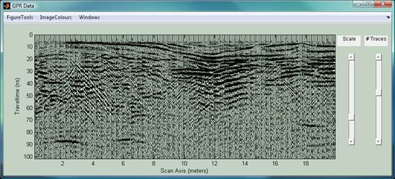
Figure 2.3. The "GPR Data"
figure in variable-area display mode.
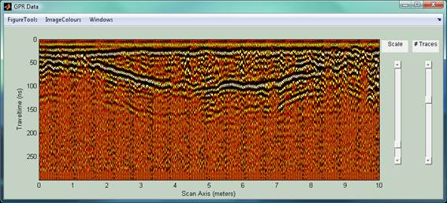
Figure 2.4. The "GPR Data"
figure in combined wiggle-trace / image display mode. The image is displayed in
a brightened hot colormap.
As of Release 2.2.4.3, the
GPR Data and the Processed GPR Data figures feature context menus intended to facilitate the handing (management) of
the current input and output data and the flow of work. These are accessible by
right clicking on the axes, or on the
images etc. of the Input and Output Data displays. The former (GPR Data)
context menu is shown in the left panel of Figure 2.5 and the latter
(Processed GPR Data) in the right panel of Figure 2.5. It is apparent that
either menu contains decision making items from the Data
menu while the Processed GPR Data context menu includes a utility to facilitate
the inclusion of topography to depth-migrated data (Fig. 2.5 right).
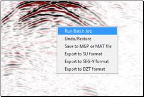 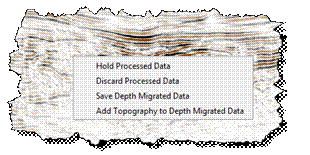
Figure
2.5.
The context menus available in the GPR Data figure (left) and the Processed
GPR Data figure (right).
Show Markers.
Overlays Marker
Trace locations on the "GPR Data" figure.
Inspect Traces
This is the first
of three utilities intended to facilitate the detailed study of the input or
output data. It comprises a Trace Viewer
to visualize and inspect the traces of the input or output data (Figure 2.6).
The program uses a horizontal slider to help you scan through the
traces and a vertical slider to zoom into the earlier times of the
traces. Further scrutiny into the time series of any individual trace is
possible with appropriate graphical tools (e.g. zooming, panning and
inspection/ peeking) available from FigureTools menu.
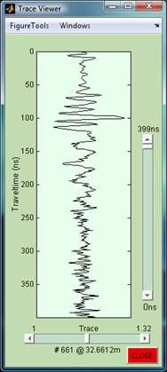
Figure 2.6. The Trace Viewer utility.
Inspect Spectra
The second of three
utilities intended to facilitate the detailed study of the input or output
data. It comprises a Spectra Viewer
to visualize and inspect the Fourier amplitude spectra of individual traces
(Figure 2.7). The program also uses a horizontal slider to scan
through the traces and a vertical slider to focus at the lower
frequencies of the trace spectra. Further scrutiny into the spectrum is
possible with appropriate graphical tools (e.g. zooming, panning and
inspection/ peeking) available from FigureTools menu.

Figure 2.7. The Spectra Viewer utility.
Inspect Time-Frequency Spectra.
This is the third
of the utilities intended for the detailed study of the input or output data.
It computes a time-frequency representation of individual traces using
the ultra-high resolution S-transform (Stockwell
et al. 1996) and displays its amplitude it in the Time-Frequency Content Viewer (Figure 2.8-left).
This is very helpful in assessing the characteristics of propagation in complex
media (e.g. existence of dispersion etc.; see also Centroid Frequency for additional information).
As before, the program also uses a horizontal slider to scan
through the traces and a vertical slider to focus at the lower
frequencies of the time-frequency content. It is also possible to display
normalized spectra by checking the Normalize box (Figure 2.8-right). Further
scrutiny is possible with the tools available from the FigureTools menu (e.g. zooming,
panning and inspection/ peeking).
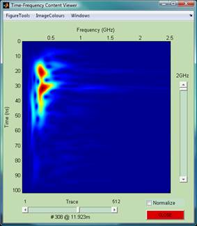 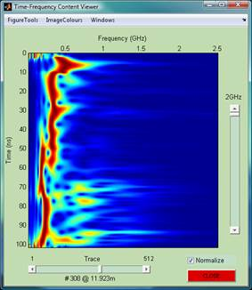
Figure 2.8. The Time-Frequency Spectra
Viewer utility.
Attenuation
Characteristics
This option allows
visualization and scrutiny into the propagation and attenuation properties of
the GPR signal. The program computes the analytic signal for all traces in the Current Input Data or Output Data, hence their instantaneous
power. Then it computes the median and a mean attenuation function, that is,
the respective median and mean instantaneous power of all traces in the
section. It also determines best fitting models for power-law and exponential
attenuation based on the median attenuation function. Finally, it displays the
attenuation functions and the best fitting power-law and exponential decay
models as per Figure 2.9. The result of this operation may allow insight into
the properties of the propagation medium and facilitate gain manipulations.
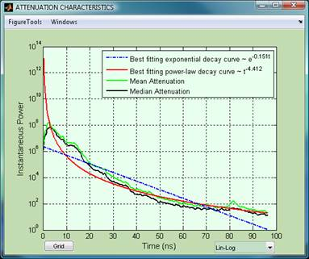
Figure 2.9. The
Attenuation Characteristics figure. It features the median and mean power
attenuation functions and the best fitting power-law and exponential decay
models.
Instantaneous Attributes
This will calculate the analytic signal and hence the instantaneous attributes of
GPR traces. The instantaneous amplitude of the input sequence is the amplitude
of the analytic signal. For GPR data it measures the reflectivity strength,
reducing the appearance of random signal in the data. The instantaneous phase
angle of the input sequence is the (unwrapped) angle of the analytic signal;
the instantaneous frequency is the time rate of change of the instantaneous
phase angle.
Centroid
Frequency
Computes and displays the
frequency of the Spectral Centroid, i.e. the location of the centre of mass of the signal
spectrum, as a function of time and
distance. This is calculated as a weighted mean of the frequencies
present in the signal. Mapping the
centroid frequency offers a synopsis of the spectral content of the
data, hence a measure of changes in propagation conditions. The centroid
frequency is expected to decrease (increase) as a function of time, as the
signal enters high (low) attenuation domains and is also expected to exhibit
consistent gradual downshift in cases of dispersive propagation. The
calculation of the centroid frequency is based on an ultra-high resolution
time-frequency representation of a time series, i.e. of the amplitude spectrum
at each instant along a trace, computed with the S-transform (Stockwell et al.,
1996). The centroid frequency is computed and displayed in
Processed Data mode (Figure 2.10). This means that the centroid frequency
matrix (or image) can be held and further manipulated (e.g. smoothed) with
other filtering methods.
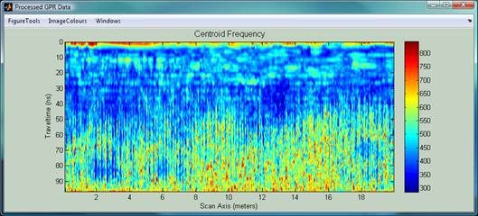
Figure 2.10. The centroid frequency map
of the data shown in Figures 2.2 and 2.3. Note the blue pockets of low centroid
frequency inside red areas of high centroid frequency at traveltimes longer
than 70 ns: the blue pockets correlate with dull reflections in the observed
data and indicate areas where high frequencies are severely attenuated. This,
for instance, may indicate the presence of pockets of moisture.
Curvature
Attributes
Computes and displays
Curvature Attributes applicable to 2-D GPR data. The interpretation of 2-D GPR
data can be supported by imaging and analysis of the most positive, most
negative, maximum and minimum curvatures, which are attributes successfully
used for fault/edge detection in 3-D seismics (for a comprehensive introduction
see Roberts, 2001; Chopra and Marfurt, 2007; references therein). The extrinsic curvature of a
surface can be defined as the rate of change of the angle through which the tangent
to a surface turns while moving along a curve on the surface, or even more
naïvely, how fast the surface bends. By convention, the curvature at a
point on a surface is positive when vectors normal to the surface diverge in
the vicinity of that point, i.e. when the shape of the surface is convex as in
hills, ridges etc. Conversely, the curvature is negative when vectors normal to
the surface diverge in the vicinity of a point, i.e. when the surface is
concave as in valleys. Out of the infinity of possible curves and corresponding
curvatures on a three-dimensional surface, the most useful subset is the one
defined by curves in the directions of the normals to the surface, i.e. by
curves defined by the intersection of the surface with planes normal to the surface.
The curvatures of such curves are called normal.
The maximum curvature is the absolutely
largest of all possible normal curvatures determined at a given point.
Conversely, the minimum curvature is
the absolutely smallest of all normal curvatures. The most positive curvature K+
at a point on a surface is the largest of all positive values determined from
all possible normal curvatures at that point. Conversely, the most negative curvature K- is the smallest of all negative values determined
from all negative normal curvatures. By mapping the maximum, minimum, most
positive and most negative attributes one obtains edge-type images. Lineaments
of maximum/minimum curvature attributes are effective in delimiting
discontinuities and discontinuity geometries. Lineaments of high K+ values trace ridges and
lineaments of low K- values trace valleys and troughs in the texture of
the data. What is important to clarify in this necessarily parsimonious
introduction, is that curvature attributes can be used to identify faulting and
fragmentation down to the level of individual rock blocks, because these would
be delimited by the ridges and troughs of reflections from their interfaces
with neighbouring blocks, provided of course that said interfaces are
sufficiently reflective.
On selecting the Curvature
Attributes option, matGPR will respond with a GUI asking the user to
specify which attribute to compute (see below). By checking/unchecking the Equalize
box, the user may also specify whether to equalize the data before attribute
computations commence, or not. The default is not to equalize for Most Positive
and Most Negative curvature computations and to equalize for Maximum and
Minimum curvature computations. The curvature attributes are computed by
clicking GO.
Figure 4.11 shows a radargram
measured on a levelled surface above massive limestone fragmented by conjugate
normal faulting and jointing; karstification has nucleated along the fault
walls and many of the resulting voids were subsequently filled with ferriferous
argillaceous material of lateritic composition. The radargram is shown after
global background removal, amplification with the Inverse Amplitude Decay
technique and F-K migration with a uniform velocity of 0.085 m/ns. Features
observable in the migrated section are down-dipping reflections attributed to
faults and fractures, very faint
up-dipping quasi-linear reflections also attributed to fractures and clusters
of strong reflections along the larger fractures and fracture zones, (e.g.
between 510m and 4080ns), sometimes associated with the intersection of down-
and up-dipping fractures. Figure 4.12 illustrates the corresponding most
negative curvature. It exhibits alignments corresponding to quasi-linear
reflections observable in Fig. 4.11. At distances 511 m and traveltimes 2080
ns, the rock appears to be heavily fragmented and brecciated; it comprises a
mosaic of blocks whose outlines and orientations are clearly associated with
up- and down-dipping fractures. The heavy apparent fragmentation indicates that
this area may correspond to a down-dipping fault zone. At distances beyond 15m
fragmentation is less intense but still present, within and immediately
around fractures. The quality of estimation deteriorates sharply with
increasing noise, so that curvature attributes cannot yield reliable
information at traveltimes longer than 80ns.
Figure 4.11. Radargram measured above massive fragmented
limestone. The data has been migrated with a uniform velocity of 0.085 m/ns.
Figure 4.12. The Most Negative curvature attribute computed from
the data of Fig. 4.11.
3. Basic Processing: The "Basic
Handling" menu
Set up Batch Job.
matGPR allows for
many processing operations to be applied in batch mode (batch jobs), thus
saving valuable time. The operations available for execution in batch mode
and the relevant required parameters/ options are shown in Figure 3.1 and
include:
A. Items for the Basic Handling menu (the
present Section 3):
(1)
Time-zero adjustment (Adjust Signal Position).
(2)
Radargram size reduction by
discarding late-time arrivals (Trim Time Window).
(3)
Per-trace subtraction
(removal) of the DC component (Remove DC).
(4)
Wow elimination (Dewow).
(5)
Deamplification of raw DZT
(GSSI) data (removal of DZT Header Gain).
(6)
Amplification by Standard Automatic Gain Control
(Standard AGC)
(7)
Amplification by Gaussian-tapered Automatic Gain
Control (Gaussian-tapered AGC).
(8)
Amplification by the Inverse
Power Decay method.
(9)
Amplification by the Inverse Amplitude Decay method.
(10)
Modification of the sampling rate (Resample Time-Axis).
(11)
Modification of trace spacing spatial resampling (Resample Scan Axis).
(12)
Trace equalization (Equalize).
B. Items from the Filtering and Imaging
menus (Sections 4 and 5):
(13)
Global Background
or mean trace subtraction.
(14)
Karhunen Loeve
Filtering (lower-dimensional subspace approximation)
(16)
B-Spline Wavelet Filtering, that is Directional Wavelet Filtering applied
only along the temporal axis (zero azimuth).
(17)
F-X Deconvolution.
(19) 1-D Migration with option to select between
F-K Migration (Stolt) or Phase-shifting Migration (Gazdag). The velocity
model must be imported from disk file; for details see1-D velocity model.
(20)
1-D Time-to-Depth
Conversion. The velocity model must be imported from disk file; for details
see 1-D velocity model.
Jobs in the batch
are executed sequentially and the GUI of Figure 3.1 will assist you in setting
up the execution sequence (batch queue).
To do so, you have to set the priority (STEP
#) of each operation you need to include in the batch and the
relevant execution parameters. In the example of Figure 3.1, the programmed
sequence of operations (queue) is: 1) Trimming of the
Time W; 2) Global Background Removal; 3) DC Removal; 4)Resampling of Time Axis
to 512 samples; 5) Resampling of Scan Axis to 512 samples; 6) F-X
Deconvolution; 7) Time-to-Depth Conversion with velocity model imported from
file veldata_test.dat. Also note that:
a.
Jobs without a set priority (STEP
#) are not executed. If you want to exclude or remove a job from the
queue, simply eliminate the STEP # in the pertinent panel (as in Figure 3.1).
b.
The routine does not check the queue for repetitions
of the same priority (STEP) number. At present, this responsibility is left to
the user who must exercise due caution.
c.
The parameters required for the execution of jobs in
the queue are supplied via the relevant check boxes and editable boxes of
Figure 3.1. The significance and function of the parameters can be found in the
relevant entries of Sections 3 and 4, pointed to by the hyperlinks above.
d.
The queue and execution parameters are stored in memory
and can be used time and again with different data sets, until they are changed
by a new execution of Set up Batch Job.
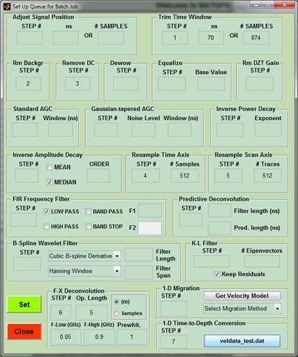
Figure 3.1. GUI to set up and store a
batch job.
Run Single Batch Job.
Execute batch queue
with priority and parameters retrieved from memory. The queue and parameters
can be used repeatedly with different data sets. Moreover, because they are
saved to/ loaded from the matGPR preferences file, they are available for use at
later analysis sessions.
Run Multiple Batch Jobs.
Execute the same batch
job for multiple GPR data files with queue and parameters retrieved from memory.
The GUI of Figure 3.2, (similar in layout and function to the Concatenate Sections window of the Data
menu), facilitates the assemblage of the list. The files in the list may be in any of the allowed data formats (DZT,
RD3, DT1, SEGY, SU, MAT and MGP), as specified in the Import Raw Data item. The list is assembled by
left-clicking the Browse/Add button and invoking the file
browser. Multiple files can be selected using the Cntrl and Shift keys. Files can be
removed from the list by selecting them and left-clicking the Remove from list button. At present, the GPR data files cannot span
multiple directories and the program does not issue a warning.
The Proceed
button begins the execution of the batch job on each file in the list. matGPR
displays each of the input and processed data files but does not store the
resulting IPD internally: instead, it
exports the each of the processed data files in the preferred matGPR format
(MAT or MGP) for later analysis.
As with single
batch jobs, the queue can be used repeatedly with different data sets; because
they are saved to/ loaded from the matGPR preferences file, they are available for use at
later analysis sessions.
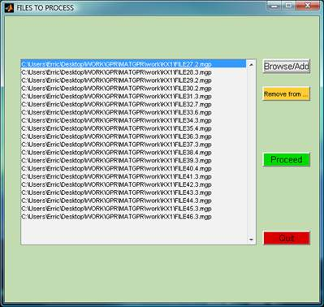
Figure 3.2. GUI to assemble a list of
files on which to execute batch jobs.
This option allows control of
the vertical position of the surface reflection, i.e. the
place in time where the radar pulse leaves the antenna, and enters the
subsurface. It can therefore be considered to be time zero, and its position
should be at the top of the scan. Modern GPR systems are usually supplied with
built-in utilities, manual or automatic, to identify the surface reflection and place it correctly
at the top of the time window. Quite often, the system overshoots, leaving a zone
of flat-line data at the top of the trace (no signal). The large reflection
just below the flat data zone will be the surface reflection. Sometimes system
undershoots or is incorrectly set up. At any rate, proper positioning of the time-zero
is necessary; otherwise the location of sub-surface reflectors may be
misidentified. The post-acquisition determination of time-zero amounts to a
static correction. matGPR provides for the graphical
determination and adjustment of time-zero using the Trace
Viewer utility.
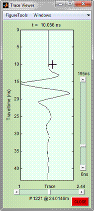
Details of this
operation are shown in shown in Figure 3.3. You select a representative trace and
zoom in at the beginning of the time window using the slider rule. The
time-zero is determined by pointing with the crosshair cursor and clicking the
left mouse button. The location of the cursor is shown above the axes. The
systems estimate of pulse duration, if any, is displayed at the matGPR
information window may assist in making a better decision. matGPR displays the
current pick through the Request interface and waits for your decision (see
below). By pressing Yes you loop to improve your selection. By pressing No the
program asks for confirmation by means of the Please
confirm dialog box, in which you can fine-tune your decision if
necessary. Pressing OK completes the operation.
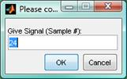
Trim Time Window
This option reduces the size of the GPR data matrix by discarding the
late arrivals. Very often, the later parts of the traces contain only useless
noise occupying valuable memory. This option is also useful when one wishes to
extract a certain part of the data for some specific purpose. You need to
provide the cut-off time at which the
time window will be trimmed (the data after this time will be
discarded). matGPR displays a menu asking how you wish to enter the required
information.

If you choose to Use Cursor
the program focuses on the Data Figure and a hairline cursor appears. You enter
the cut-off time by pointing and left clicking at the desired location along
the time axis. If you choose to Use Fingertips, the program
displays a dialog box in which you enter the exact cut-off time in nanoseconds.
Edit Scan Axis
This option reduces the size of the GPR data array by discarding groups
of traces at the beginning or at the end of the sections scan axis (scanline).
It is also used to extract groups of traces or even large parts of the section
to a separate data set. The routine initializes a GUI, in which you specify
the desired operation (e.g. trim, or extract, input mode, see Figure 3.4). The
table below explains how to use the GUI. By pressing Go matGPR performs the desired operation.
 Trimming the Current Input Data also causes the Marker
Traces (if any) and XYZ coordinates data to be adjusted.
Trimming the Current Input Data also causes the Marker
Traces (if any) and XYZ coordinates data to be adjusted.
|
Input mode |
Desired action. |
|
Use Pointer selects location by
pointing the hairline cursor and clicking on the GPR Data figure. |
Trim Front removes groups of traces at
the beginning of the scan axis. |
|
Use Fingers allows direct input of location
in the edit boxes below. |
Trim Back removes groups of traces at
the rear of the scan axis. |
|
The edit boxes are disabled when Use Pointer
is checked (Figure 3.3.left). |
Extract removes a group of traces
to a separate data set. |
|
Edit boxes are enabled when Use Fingers is checked, but
which edit box is enabled depends on the desired action, i.e. which checkbox
is activated (Figure 3.3.right). |
|
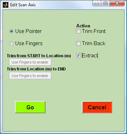 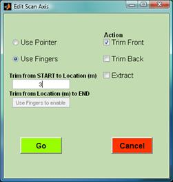
Figure 3.4. The Edit
Scan Axis GUI: Left, when in
graphical (Use Pointer) input mode
and right, in direct (Use Fingers) input mode.
Remove Bad Traces
Pick bad traces by pointing
and clicking and replace them with interpolants computed from their near
neighbours. The routine displays the input GPR section and switches to a
cross-hair cursor. Pick the bad traces by pointing with the cursor and clicking
the left mouse button. To facilitate
positioning, the cursor co-ordinates are displayed at the bottom of the figure.
Zooming and panning can also be used. A selected bad trace is marked with a
vertical red line. If you make a mistake, (pick a wrong trace), you can undo it
by clicking the middle mouse button.
To finish, click the right button.
The routine then uses the near neighbours of the bad traces to compute their
interpolant substitutes and replaces the bad traces in the output data section.
 Note, because this
function t uses interpolation, it works best for isolated bad traces, or small clusters of adjacent bad traces. In
the latter case the clusters should better be separated by relatively extended
groups of consecutive good traces. For the same reason, the function is not recommended for removing extended groups
of bad traces, as it will probably fail to produce reliable interpolants.
Note, because this
function t uses interpolation, it works best for isolated bad traces, or small clusters of adjacent bad traces. In
the latter case the clusters should better be separated by relatively extended
groups of consecutive good traces. For the same reason, the function is not recommended for removing extended groups
of bad traces, as it will probably fail to produce reliable interpolants.
Remove DC
This will remove
the DC component (arithmetic mean) from each trace of the GPR section
individually.
Dewow
This operation will eliminate wow by applying a apply zero-phase high
pass FIR filter with a cutoff frequency at exactly 2% of the Nyquist.
Equalize traces
If
equalization is selected then the sum of the absolute values of all samples in
a trace is made the same for all traces. For instance, if the trace that is
selected to be used for equalization has a sum of all absolute values of 1000,
then the sum of absolute values of every trace in the data set will be set to
1000 using a multiplying factor. When called, the routine displays a GUI, in
which the user specifies the trace which will be used as the base.
This can be a) the First Trace; b) the
Mean trace; c) the Median Trace;
d) any trace specified by the user in the Give
Trace # box, and, e) any positive number (base value)
provided in the Give Base box.
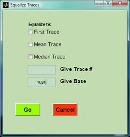
Remove DZT header gain
GSSI
DZT data usually have time-varying (range) gain applied and the gain
breakpoints and values are stored in the file header. On importing a DZT data
set, the
range gain data is stored in the Current
Input Data structure. The header gain information is preserved during
manipulations that change the size of the data array (e.g. signal position
adjustments, trimmings, marker interpolation, resampling, etc.) and is possible
to remove at any time, recovering the raw data without amplification. This
operation is useful if you wish to compare data files acquired with different
gain functions or use true amplitude information.
 This option applies ONLY to GSSI DZT
data. Måla RD3 and S&S DT1 data usually do not have gain applied.
This option applies ONLY to GSSI DZT
data. Måla RD3 and S&S DT1 data usually do not have gain applied.
Inverse Amplitude Decay.
Applies an
empirical gain function, which exactly compensates the mean, or median
attenuation observed in a 2-D GPR section. The procedure:
(i)
Computes the analytic signal for all traces in the GPR
section, hence their instantaneous amplitude.
(ii)
Computes a median and a mean amplitude attenuation
function, i.e. respectively the median and mean instantaneous amplitude of all
traces in the section.
(iii)
Computes empirical best fitting attenuation models
with a function of the form
with N
linear parameters and N non-linear
parameters.
(iv)
Displays the mean and median attenuation and best
fitting model (e.g. Figure 3.3.5 left) and by means of a floating menu (Figure
3.3.5 right), allows you to experiment with the order N of the fitting
function (Increase
Order or Decrease Order
buttons) and explore the merits of using the median or mean amplitude decay
curve (Use
Mean Attenuation or Use Median
Attenuation buttons) to obtain an optimal gain function. By pressing
Proceed,
the fitting session is terminated and the gain function is computed.
(v)
The gain function is the normalized inverse of the
amplitude decay model, i.e. has the form
and produces a practically true white noise series, while preserving relative
signal amplitudes across the scan axis (i.e. at similar 2-way traveltimes).
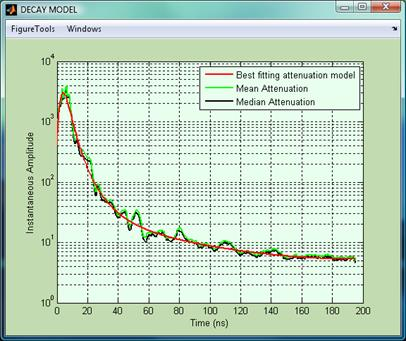 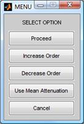
Figure 3.5. The left panel shows the result of the Inverse Amplitude Decay
analysis. The right panel shows the
floating menu to be used for obtaining an optimal decay (hence gain) function.
Standard AGC
Automatic Gain Control (AGC) is a process by which gain is automatically adjusted in a specified manner,
as a function of a specified parameter, such as signal level. In matGPR, the
time-varying signal level is measured by the RMS amplitude computed over a
sliding time window of a given length. matGPR requests the length of the window
in nanoseconds, by means of a dialog box:
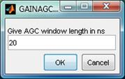
By scaling the
amplitude of the data at the centre of the sliding window with respect to the
RMS amplitude of the window, the process ensures that ranges of low amplitudes
are emphasized with respect to ranges with high amplitudes. Information of the
true (measured) amplitude is lost. The result depends essentially on the length
of the AGC sliding window. Short lengths (e.g. a very few ns) will introduce a
more uniform distribution in the amplitudes of the output traces and will tend
to smear the stronger reflections. On the other hand, very long windows may not
provide adequate amplification of low amplitude ranges. Inasmuch as each data
set has its own peculiarities, experimentation is recommended prior to holding
the output data.
Gaussian-tapered AGC
Automatic Gain Control (AGC) is a process by which gain is automatically adjusted in a specified manner,
as a function of a specified parameter, such as signal level. In matGPR, the
time-varying signal level is measured by the RMS amplitude computed over a
sliding time window of a given length.
However, in contrast to the simple boxcar window of the standard AGC operation
described above, this variant a uses a boxcar window weighted (tapered) with a
Gaussian bell function, whose breadth is a function of the noise level. matGPR
will request an estimate of the noise level (if unknown, zero is an acceptable
figure) and the length of the AGC window in ns.
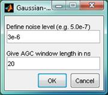
By scaling the
amplitude of the data at the centre of the sliding window with respect to the
RMS amplitude of the window, the process ensures that ranges of low amplitudes
are amplified with respect to ranges with high amplitudes. However, the
Gaussian taper emphasizes the contribution of the data around the centre of the
window, thus producing a more focused result than standard AGC. Information of
the true (measured) amplitude is lost. Here as well, the result depends
strongly on the length of the AGC sliding window. Inasmuch as each data set has
its own peculiarities, experimentation is recommended prior to holding the
output data.
Inverse Power Decay
This option applies a gain function of the form g(t) = scale× tpower. You will be asked to supply
the power. Note, however, that the
program computes the attenuation characteristics of the data, in order to obtain
a best fitting power-law attenuation model. The suggested power is the exponent of the best-fitting model less 1. This is
usually a very good solution, but experimentation may provide a result more
suitable for the data. You can inspect the attenuation characteristics and the
best fitting power-law model by selecting Attenuation
Characteristics under the View
menu. The scale is computed
automatically, so as to preserve the amplitude range values of the input data
(compensate for the effects of tpower).
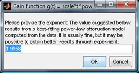
Experience shows that
for zero-mean and time-zero adjusted data, the suggested power is around 2 and the observed attenuation is fractional and around
3. From a practical point of view, power
~ 3 applies little gain, or even attenuates the early (near surface) arrivals,
while applying too much gain and emphasizing the late arrivals. On the other
hand, power ~ 2 apportions higher
gain at the early parts of the time window and lower gain at the late parts, providing
for a more balanced eventual distribution of amplitudes. Claerbout (1996, pp. 222-223) gives a theoretical
justification for using power = 2 in
seismic data.
Resample Time Axis / Resample Scan Axis
This option will increase or decrease the sampling rate, either in time
(IPD.dt) or is space (IPD.dx), using band-limited sinc interpolation.
Band-limited
interpolation of discrete-time signals is a basic tool with extensive
application in digital signal processing. The problem is to correctly compute
signal values at arbitrary continuous times from a set of discrete-time samples
of the signal amplitude (interpolate the signal between samples). Since the
original signal is always assumed to be band-limited to half the sampling rate,
(otherwise aliasing distortion would occur upon sampling), Shannon's sampling
theorem tells that the signal can be exactly and uniquely reconstructed for all
time from its samples by band-limited interpolation. Crochiere
and Rabiner (1983) provide a comprehensive summary of classical signal
processing techniques for sampling-rate conversion. In these techniques, the
signal is first interpolated by an integer factor L and then decimated by an
integer factor M. This provides sampling-rate conversion by any rational factor
L/M. The conversion requires a digital low pass filter whose cut-off frequency
depends on max{L, M}. While sufficiently general, this formulation is less
convenient when it is desired to resample the signal at arbitrary times /
locations or change the sampling-rate conversion factor smoothly over time.
matGPR employs a flexible
public-domain resampling algorithm, which will evaluate a signal at any time or
location specifiable by a fixed-point number (Smith and
Gosset, 1984). In addition, one low pass filter is used regardless of the
sampling-rate conversion factor. The algorithm effectively implements the analogue
interpretation" of rate conversion, as discussed in Crochiere
and Rabiner (1983), in which a certain low pass filter impulse response
must be available as a continuous function. Continuity of the impulse response
is simulated by linearly interpolating between samples of the impulse response
stored in a table.
The resampling
routines (see below) have but only one request: The output number of samples in
the time dimension (Samples per), or the output number of traces in the
horizontal direction.
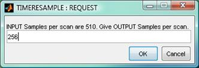
Edit Markers
matGPR provides a
suite of transformation and positioning utilities. For GPR instruments not
equipped with survey wheels or other automatic distance measuring and
triggering device, this allows to use information about the known
positions of certain marker traces in order to transform data collected
in equal-time spacing mode to data with equal-distance spacing (see Transform
to Equal Spacing below). In all other cases, the known positions of the marker traces
help in assigning proper coordinates of all traces with respect to the
coordinate system of the GPR survey. These utilities are presently not available for PULSE EKKO (DT1) data.
Key to this operation is the marker information matrix (i.e. the IPD.markertr
field), which must be a 4 column matrix as follows:
1)
First Column :
The ID (sequential) number of the Marker Traces;
2)
Second Column :
The x-coordinates of the Marker Traces in a local reference system;
3)
Third Column :
The y-coordinate of the Marker Traces in the local reference system;
4)
Fourth Column :
The z-coordinates of the Marker Traces in the local reference system.
On importing raw,
unequally spaced data with Marker Trace information only, as for
instance in the DZT format, IPD.markertr will comprise a single column vector
of the ID (sequential) numbers of the marker traces. In order to be useful for
transformation and positioning, the field must be augmented to the four column
specified above.
The co-ordinates of
the marker traces can be assigned or edited and changed in two ways:
1)
Using an in-house screen editing utility (Basic Handling à Edit
Markers à Use Editor Mode). In this case
matGPR generates the Marker
Information window featuring an edit area, where the Marker Trace
information is displayed. You may insert or change the Marker Trace
co-ordinates in a simple screen-editing process, as shown in Figure .6 and
click OK
to accept and save them, or Abort to
discard them.
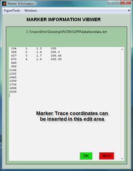
Figure 3.6. The Marker Information window generated when the user decides to process Marker Trace
information in Editor
Mode.
2)
Entering the information through dialog boxes (Basic Handling à Edit
Markers à Use Interactive Mode). In this case matGPR will first inquire whether the
marker traces are regularly or irregularly spaced.
a.
In the former case it will respond by asking for the
location of the first marker trace and the (regular) spacing of the markers
along each one of the x, y and z coordinate axes. Once it has accepted this
data, it will generate the IPD.markertr field.
b.
In the latter case it will loop asking for the x, y
and z coordinates of each marker trace, one by one.
Import/Replace Positioning Data.
This allows a user
to import and/or replace Marker Trace (positioning) information from a disk
file. This allows one to prepare trace positioning (marker) data independently
of the built-in matGPR marker editing utilities (see
above). More importantly, it allows one to introduce updated or more accurate
positioning information (e.g. obtained by DGPS) and recompute (reposition) the traces with reference to
the coordinate system of the survey (Make XYZ utility).
The format of the Marker Trace file is specified in the Edit Markers item above.
Transform to Equal Spacing.
This option uses the spatial data of Marker Traces (prepared by Edit Markers or imported from an ASCII disk file), to
transform data collected at equal-time spacing mode, to data at equal-distance
spacing. The
input data does not have to be measured along straight lines: the geometry of
the measurements can be anything you like! The
transformation can be done in two ways:
1.
By interpolation using the (shape
preserving) piecewise cubic Hermite interpolating polynomial method (PCHIP,
e.g. Kahaner et al, 1989). The algorithm is as
follows: The locations of the (unequally) spaced traces of the input radargram
are determined by interpolation, using spatial information from the marker
traces and assuming an approximately constant recording rate between successive
markers. The number of traces of the transformed radargram is automatically
determined to be , where M is the number of traces of the input
(untransformed) radargram. The equal spacing between the traces of the
transformed radargram is automatically determined to conform to the number of
traces and the start and stop locations specified by the first and last
markers. The locations of the traces of the transformed radargram are then
determined. The output traces are then calculated by interpolation between the
input traces. Owing to the choice of N, the transformed radargram is always
an exact map of the measured radargram.
2.
By stacking as follows: The locations of
the (unequally) spaced traces of the input radargram are determined by
interpolation, using spatial information from the marker traces and assuming an
approximately constant recording rate between successive markers. The number of
traces of the transformed radargram is automatically determined to be , where M is again the number of traces of the input
radargram. The equal spacing between the traces of the transformed radargram is
automatically determined to conform to the number of traces and the start and
stop locations specified by the first and last markers. The locations of the
traces of the transformed radargram are then determined and a bin size equal to
this spacing is specified; the bin is centred at a new trace location. All
traces of the input radargram located within a bin are stacked and averaged to
create the new trace for each location of the output (transformed) radargram.
Owing to the choice of N, the bin size is always larger than the
approximate spacing between the traces of the input data, so as to ensure that
there will always be more than one trace per bin to be stacked.
For normally measured data the two methods
perform comparably: use whichever you think is more appropriate for your data.
The interpolation method, however, is guaranteed to work in the case of sparsely measured input data and will never return empty traces.
N.B. 1. The transformation routines automatically
assign the x-, y- and z- coordinates of the traces of the transformed
radargram.
N.B. 2: Inasmuch as the x,
y and z coordinates of the marker traces are fixed with respect to the reference frame, if the section was
recorded in a reverse direction (i.e. in a sense opposite to the positive
direction of the coordinate axes), as for instance when the survey is conducted
in meandering forward - backward sense, the transformed section and marker
trace data are flipped and streamlined with the axes of the reference frame.
Make X Y Z.
Generate x, y and z
coordinates of the Current Input Data traces, with
respect to a local (survey) reference system. This is done with interpolation
between the known coordinates of control (marker) traces. The coordinates of
the control traces are passed as arguments (by the marker information matrix)
or read from a disk (marker) file. The data must have equally-spaced traces.
4. Advanced Processing: The "Filtering" menu
Mean Filter / Median Filter
These options will
respectively perform mean and median spatial filtering in one and two
dimensions. The filter is applied by sliding a user-specified filter window over
a 2-D data wall. The data value corresponding to the central element of the
window is substituted by the mean or median of the window data. Zero padding
equal to 1/2 the window length is applied, therefore the edges of the output
data are expected to be distorted. For this reason, the size (dimensions) of
the smoothing window should be kept reasonably small. For meaningful results,
you should nor exceed 20% of the data matrix (radargram) size.
Note: Because this type
of filtering is computationally intensive, matGPR R1 implemented a Fortran
90 MEX-file to do the heavier part of the numerical work. As of matGPR R2
(Revision 2.0.2.0), the MEX-file solution is no longer supported and has been replaced
by very fast (for mean filtering) and reasonably fast (for median filtering)
programming solutions written in vectorized M-code.
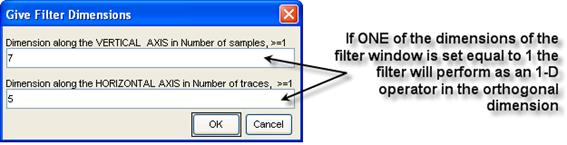
Figure 4.1. Dialog box to define the size
of the mean or median filter window.
Smoothing
Spline.
This option invokes a powerful
smoothing procedure based on the robust smoothing spline approach of Garcia (2010). The method can handle missing data,
tolerate NaNs or Infs and only requires a real positive smoothing parameter (Factor) which controls the
rigour of smoothing. The Factor can be very small but the larger it is the smoother
the output The default Factor is unity; it can be changed manually by typing
new values in the appropriate editable box and can be fine-tuned by clicking on
the increase (p) or decrease (q) push buttons.
For data with outliers (or localized large-amplitude signal components) a robust computational procedure can be
applied; this is activated/deactivated by checking/unchecking the Robust box. The default is
non-robust smoothing.
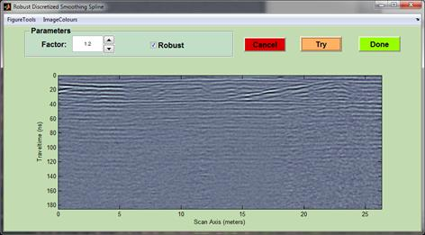
The user can perform smoothing experiments by entering different Factors
and pressing the Try button to compute and visualize the output. If, after
some trials the result is satisfactory, the user can keep by pressing the Done
button.
Remove Global Background
This will remove a global
background trace from the data. The background trace is the average trace
determined by adding all traces together and dividing by the number of traces.
This is also called stacking. The stacking process enhances coherent signal and
reduces randomly varying signal (or noise). In this case, the coherent signal
is the horizontal banding often seen in GPR data (what we call system noise)
and the randomly varying signal is the received radar signal from the
subsurface. The appearance of the data is often improved by removing the
horizontal banding. Caution must be exercised, however, with small data sets
(less than about 1000 traces) or data that has strong natural horizontal
reflectors. Frequency filtering may be an
alternative for some data sets.
Suppress Horizontal Features
Background trace
removal calculations: The mean (background) trace of a sliding window is
subtracted from the data in the window. This operation will eliminate small
horizontal features (coherent signal) from the data and may be used to expose
reflections that dip at high angles, (removing for instance most reflections
due to hydrogeologic sources). matGPR has only one request (see below): the size
(width) of the sliding window. The appropriate size of the window is unique for
each data set and should be decided after due experimentation.
Suppress Dipping Features
Background trace
calculation and retention. As opposed to removing the sliding-window's average,
trace as above, this operation removes the foreground, that is the background
trace is assigned to the centre trace in the sliding window (rather than being
subtracted from the data). This operation will remove high-angle reflections (a
dip filter), for instance to expose the sub-horizontal hydrogeologic features
more clearly. matGPR has only one request (see above): the size (width) of the
sliding window. The appropriate size of the window is unique for each data set
and should be decided after due experimentation.
Karhunen - Loeve Filter
The KarhunenLoeve (KL) transform is a preferred method for
approximating a set of vectors or images by a low-dimensional subspace. In matGPR the
approximating subspace is defined in terms of the first (largest) N singular values and singular vectors (eigenimages)
of the data. The MATLAB routine svds
is used for the transformation. The low-dimensional approximation is
re-synthesized from the N largest
eigenimages and is a smooth version of the input data, exhibiting enhanced
lateral coherence. matGPR requests the number N of the largest singular values:
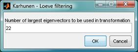
The appropriate
value of N is unique for each data
set and should be determined by experiment. After computing the approximation,
matGPR displays the reconstructed data (Figure 4.2a, top panels), and the
residuals after subtracting the reconstruction from the data (Figure 4.2,
bottom panels). If R is the rank of the data matrix, the residuals
comprise a low-dimensional approximation based on the R-N smallest
eigenimages. Figure 4.2a, N = 22
and the reconstruction effectively a smooth version of the data without the
small scale variations.
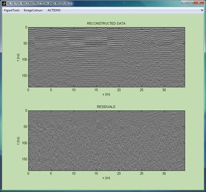
Figure 4.2a. Top: A low-dimensional
subspace approximation of a data set using the first 22 eigenimages (principal
components). Bottom: The complementary approximation (residuals) using
the 462 smallest eigenimages.
In Figure 4.2b, N = 2 and the reconstruction comprises
only the most powerful (principal) components of the input data, namely strong
horizontal reflections and ringing. In the latter case, the residuals offer an
opportunity to study details possibly masked by the powerful principal
components. By means of the ACTIONS menu, (see Figure 4.2b), you may decide
whether to keep the reconstruction or the residuals as the output of the K-L
filtering operation.
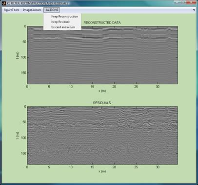
Figure 4.2b. A low-dimensional subspace
approximation of the same data set using the first 2 (largest) eigenimages. Bottom:
The complementary approximation (residuals) based on the 482 smallest eigenimages.
FIR Frequency Filter
Design and apply a FIR frequency filter on the traces
of the GPR data. Low / high pass, band pass and band stop filters can be
designed. The simple strategy employed in matGPR is to construct a very long
FIR wavelet (75% of the data length) in order to achieve very narrow transition
bands, while eliminating Gibbs effects and ripple structure. The filter is
applied in the frequency domain and in a forward and a backward sense, so to
preserve phase information. The process is fully vectorized, so that very large
data matrices can be processed in less than 1 second with modern machines.
There are three ways to design the filter, which you
can control the filter design mode through the Data > Settings > Design F or K
Filters menu and one of
the choices:
 On a test trace or scanline: The filter will be designed on the basis of the spectrum
of a particular test trace. This is the
default. When you request a filtering operation, matGPR will prompt you to
pick a test trace, whose spectrum will
be used as a template for determining
the characteristics of the filter. You will then point the crosshair cursor on
the desired test trace and click the left mouse button. The spectrum of the
trace will be displayed and you will again be prompted to pick the cut-off
frequency(ies) using the crosshair pointer. Figure 4.3 shows an instance from
the design of a band-pass filter, where the lower cut-off frequency has already
been entered and the upper cut-off is about to be decided. matGPR will then compute
the filter and will display the spectrum of the test trace (blue), the spectrum
of the filter (red) and the spectrum of the filtered test trace (green), as per
Figure 4.4 It will, then, ask you to accept or reject the design. A negative
reply will discard the filter and repeat the procedure. A positive reply will
apply the filter.
On a test trace or scanline: The filter will be designed on the basis of the spectrum
of a particular test trace. This is the
default. When you request a filtering operation, matGPR will prompt you to
pick a test trace, whose spectrum will
be used as a template for determining
the characteristics of the filter. You will then point the crosshair cursor on
the desired test trace and click the left mouse button. The spectrum of the
trace will be displayed and you will again be prompted to pick the cut-off
frequency(ies) using the crosshair pointer. Figure 4.3 shows an instance from
the design of a band-pass filter, where the lower cut-off frequency has already
been entered and the upper cut-off is about to be decided. matGPR will then compute
the filter and will display the spectrum of the test trace (blue), the spectrum
of the filter (red) and the spectrum of the filtered test trace (green), as per
Figure 4.4 It will, then, ask you to accept or reject the design. A negative
reply will discard the filter and repeat the procedure. A positive reply will
apply the filter.
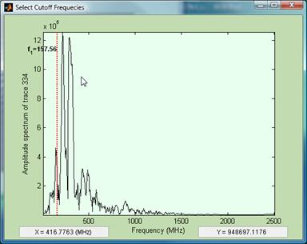
Figure 4.3. An instance from the design of
a FIR band-pass filter. The lower cutoff frequency has already been determined
and the upper cutoff is about to be decided and picked with the crosshair cursor
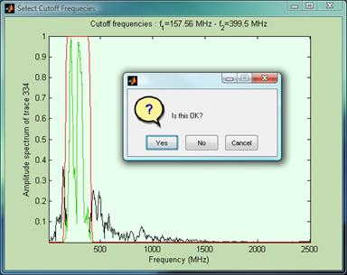
Figure 4.4. The filter is designed and
applied to the test trace. The program displays the result and waits for the
user to decide the next step.
 On the mean trace or scanline: The filter will be designed on the basis of the
spectrum of the average (mean) trace computed from the input data, following
exactly the same procedure as above.
On the mean trace or scanline: The filter will be designed on the basis of the
spectrum of the average (mean) trace computed from the input data, following
exactly the same procedure as above.
 Just type the cut-off frequencies: The predefined cut-off frequencies will be given
directly, through an appropriate dialog box.
Just type the cut-off frequencies: The predefined cut-off frequencies will be given
directly, through an appropriate dialog box.
FIR Wavenumber Filter
Design and apply a
FIR frequency filter along the scan axis of the GPR data. A necessary condition
for the application of the wavenumber filter is that traces are equally spaced.
This operation is exactly the same with the FIR Frequency Filter described above, but works line-wise instead
of column-wise, thus filtering wavenumbers instead of frequencies. Identical
procedures are also used in designing the wavenumber filters.
F - K Filter
Design and apply an
F - K filter. A necessary condition for the application of the F-K filter is that
traces are equally spaced if not, the procedure aborts automatically. The
available F-K filtering options include zone-pass / stop filtering,
fan-filtering (velocity fan pass/ stop) and up-dipping / down-dipping event
separation. The desired option is selected through sub-menus appearing as soon
as the Advanced Filtering à F-K Filter choice is made (Figure 4.5).
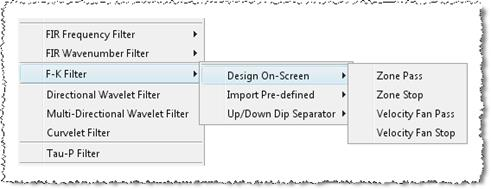
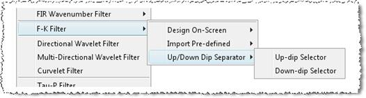
Figure
4.5. The
menus of available F - K filtering operations (left) and methods of defining the polygonal pass / stop zone (right).
Zone pass/ Zone
stop filters work like band pass/ band stop filters respectively. You are asked to
provide the coordinates of a polygonal area (zone): if you select Zone pass the F-K spectral contributions inside and on the sides of the zone will be retained. Those outside the zone
will be rejected. If you select Zone stop the spectral contributions outside the zone will be retained. Those
inside and on the sides of the zone will be rejected.There are two methods of
defining the pass / stop zone (Figure 4.5 right):
 Import Pre-defined coordinates (vertices) of the
polygonal zone from an ASCII file by selecting Advanced
Filtering à F-K Filter à Import Pre-defined à
. This allows for repeated applications of the same F-K filter on different
data sets. The structure of the coordinates file is very simple: No header; two
columns of floats, the first column
being the wavenumber co-ordinates and the second column being the frequency co-ordinates of the F-K
spectrum. Define the polygonal area
using only the positive frequency coordinates and both the positive and
negative wavenumber co-ordinates.
Import Pre-defined coordinates (vertices) of the
polygonal zone from an ASCII file by selecting Advanced
Filtering à F-K Filter à Import Pre-defined à
. This allows for repeated applications of the same F-K filter on different
data sets. The structure of the coordinates file is very simple: No header; two
columns of floats, the first column
being the wavenumber co-ordinates and the second column being the frequency co-ordinates of the F-K
spectrum. Define the polygonal area
using only the positive frequency coordinates and both the positive and
negative wavenumber co-ordinates.
 Define the polygonal zone interactively on-screen by choosing Advanced Filtering à F-K Filter à Design On-Screen à
matGPR generates the F-K spectrum and displays the logarithm of its
amplitude and displays a cross-hair cursor. You can set the vertices of the
pass or stop zone by clicking the left
mouse button at the desired location of the F-K spectrum image. The cursor
co-ordinates are displayed at the bottom of the figure. The zone vertices are
marked with a star and the enclosed area is outlined with a transparent
rubberband to enhance visualization (Figure 3.4.6). If you set a vertex
incorrectly, you can delete it by clicking the middle mouse button. There's no backward limit to this type of such
undo operations other than the size of the zone. To finish, click the right button. matGPR will ask whether
the polygon was defined to your satisfaction. If not, the process starts over.
If yes, matGPR proceeds to apply the filter.
Define the polygonal zone interactively on-screen by choosing Advanced Filtering à F-K Filter à Design On-Screen à
matGPR generates the F-K spectrum and displays the logarithm of its
amplitude and displays a cross-hair cursor. You can set the vertices of the
pass or stop zone by clicking the left
mouse button at the desired location of the F-K spectrum image. The cursor
co-ordinates are displayed at the bottom of the figure. The zone vertices are
marked with a star and the enclosed area is outlined with a transparent
rubberband to enhance visualization (Figure 3.4.6). If you set a vertex
incorrectly, you can delete it by clicking the middle mouse button. There's no backward limit to this type of such
undo operations other than the size of the zone. To finish, click the right button. matGPR will ask whether
the polygon was defined to your satisfaction. If not, the process starts over.
If yes, matGPR proceeds to apply the filter.
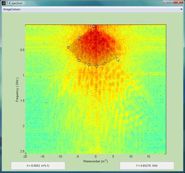
Figure 4.6. F - K filtering: Graphical
introduction of a polygonal pass / reject zone.
Velocity Fan
Pass/ Velocity Fan Stop. This option allows for fan filtering in the F-K
domain. This application only works in interactive mode by selecting Advanced Filtering à F-K Filter à Design On-Screen à Velocity Fan
. You need to define the [upper, lower] negative, and
[lower, upper] positive apparent velocity limits in an appropriate dialog box
(Figure 3.4.7). If you have chosen Velocity Fan Pass, the spectral contributions within the [lower, upper] apparent
velocity range will be retained. Those outside the range will be rejected. If
you have chosen Velocity
Fan Stop, the spectral contributions outside the [lower, upper] apparent velocity range will be
retained. Those within the range will be rejected. The positive and negative
velocity fans do not need to be symmetric, but in this case caution is
necessary because some dipping events may be differentially amplified or
attenuated. matGPR paints the velocity fan on the F-K spectrum image and awaits
for your response (Figure 3.4.8). If satisfied, you will press Yes
and matGPR will apply the filter. If not, the procedure starts over.
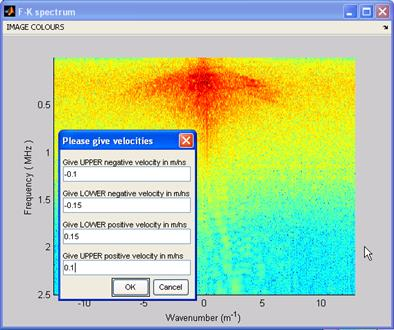
Figure 4.7. F - K
fan-filtering: Interactive definition of the pass / reject velocity fan. In
this case the fan is focused on rejecting clutter structure from the data.
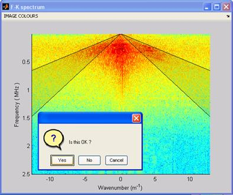
Figure 4.8. F-K fan-filtering: The
velocity fan designed in Figure 4.7 is displayed and the user is prompted to
accept or reject it. The fan focuses on rejecting clutter structure.
Up-dip/ Down-dip
Separator. The F-K transform has the
property that reflections with positive slope (up-dipping) map into the
positive-K quadrant while reflections with negative slope (down-dipping) map
into the negative-K quadrant. Therefore, by specifying a filter that stops an
entire quadrant while passing the other, it is possible to reject reflections
dipping in one direction or the other. The result is a section with features
having a unique dip direction. In this way one can separate intersecting or
overlaid reflections and study tem independently.
Directional Wavelet Filter
Signal enhancement
and information retrieval based on scale selective 1-D Wavelet Filters and orientation-and-scale
selective 2-D Wavelet and Gabor Filters. A comprehensive presentation of
the theory and several examples can
be found in Tzanis, 2013; the same is also provided
in the accompanying document Directional
Wavelet Filters.pdf.
The user is strongly advised to familiarize with the
concepts presented in the above literature before using the software. The rest
of this section assumes that the reader is familiar both with the
concepts and with the terminology used.
1-D Wavelet Filters
operate only as frequency filters; in order of coarser to finer
localization, they may comprise Cubic B-spline Derivative wavelets, Linear
B-Spline wavelets, Quadratic B-Spline wavelets Cubic B-spline wavelets and
Morlet wavelets. User-defined wavelets are also foreseen (Figure 4.9).
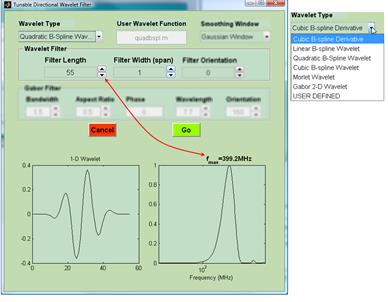
Figure 4.9. GUI to control the parameters of 1-D wavelet
filters
The wavelet is
selected via the pop-up menu labelled Wavelet Type
(Figure 4.9) and the parameter Filter Width
(span) must be unity. The Smoothing
Window and Orientation
properties are irrelevant. When the Wavelet
Type is set to USER DEFINED,
then, the name of the m-file implementing the wavelet should be typed in the
editable box labelled User Wavelet Function
and should always be callable in the form wavelet =
Wavelet_Function_Name(length_of_wavelet).
The spectral
properties (frequency localization) are exclusively determined by the Filter Length, which can be set via the
relevant editable box and adjusted by clicking on the associated up and down
arrows (push buttons). The GUI displays the wavelet (left) and the normalized
amplitude of its Fourier transform (right). The filter can be tuned to the
desired peak frequency by adjusting the length; the tuning process is displayed
in real time.
A 2-D wavelet
filter is built by sidewise arranging a number of identical 1-D wavelets
(longitudinal direction), tapering the transverse direction (span) with an
orthogonal window and rotating the resulting matrix to the desired orientation.
The length of the wavelet (longitudinal dimension) determines the scale of the
data features to be selected (isolated). The number of parallel wavelets
(transverse direction/ span) determines the width over which to smooth. For
data dependent on two dimensions, the filter will produce an output that
contains information at a specific location, of features with scales matching
the filter's bandwidth. The existence of two independent variables allows each
scale to be coupled with a particular orientation. Thus, scale and orientation
can be varied so as to construct a matrix filter tuneable at any trait in the
data.
2-D Wavelet Filters
can be designed by using:
·
Longitudinal dimension in order of coarser
to finer localization: Cubic B-spline Derivative wavelets, Linear
B-spline wavelets, Quadratic B-spline wavelets, Cubic B-spline wavelets and
Morlet wavelets. User-defined wavelets are also foreseen.
·
Transverse
dimension: Gaussian or Hanning windows (Figure 4.10).
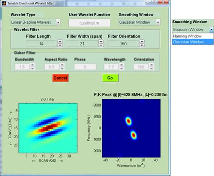
Figure 4.10. GUI to control the parameters of 2-D tuneable
directional Wavelet Filters
The properties of
the 2-D Wavelet Filters are controlled by the Wavelet
Type and the Smoothing Window
functions, as well as the parameters Filter
Length, Filter Width and Filter Orientation (azimuth) see
Figure 4.10. All the parameters can be set via the relevant editable boxes of
the Wavelet Filter panel and adjusted by
clicking on the associated up and down arrows. The length and width are given
in number of samples; the orientation is given in degrees clockwise with
respect to the time axis. When the Wavelet Type
is set to USER DEFINED, then, the name
of the m-file implementing the wavelet should be typed in the editable box
labelled User Wavelet Function; it should
always be a function callable in the form wavelet =
Wavelet_Function_Name(length_of_wavelet).
Once the necessary
definitions and parameters have been set, the GUI displays the 2-D Wavelet
Filter (in Figure 4.10 left) and the normalized amplitude of its f-k transform
(Figure 4.10 right). At any given orientation, the f-k spectrum consists of two
lobes symmetric with respect to the origin. The location (coordinates) of the
peak of the spectral lobes is determined by the Filter
Length (scale), which thus defines the temporal and spatial scale(s)
to be isolated. The shape and roll-off rate of the spectral lobes is determined
by the type/order of the wavelet, the Filter
Width (span) and the type of the smoothing window. Increasing
(decreasing) the span contracts (expands) the lobes in the azimuthal direction
and therefore influences spatio-temporal localization, but does not change the
location of the peak. The shape of the smoothing window influences the slope
(roll-off rate) of the spectral lobes in the azimuthal direction. The frequency
and wavenumber coordinates of the spectral peak are clearly displayed above the
f-k spectral plot. The 2-D filter can be tuned at the desired frequency and/or
wavenumber by adjusting (and micro-adjusting) the length of the wavelet and the
orientation of the filter. The tuning process is displayed in real time.
The 2-D Gabor filter comprises of Gaussian kernel function modulated by a
sinusoidal plane wave. In the parameterization adopted in matGPR, the filter
depends on five parameters: the Wavelength
of the sinusoidal factor, the Orientation,
(azimuth) of the filter in degrees, the spatial Aspect Ratio which specifies the ellipticity of
the filter and the Bandwidth
which comprises the half-response spatial frequency of a Gabor filter (in
octaves). The Phase
offset defaults to zero. All the necessary parameters can be set in the
editable boxes of the Gabor Filter panel of
the GUI (Figure 4.11) and micro-adjusted by clicking on the up and down push
buttons; the panel is activated only when the Gabor
2-D Wavelet is selected in the Wavelet
Type popup menu.
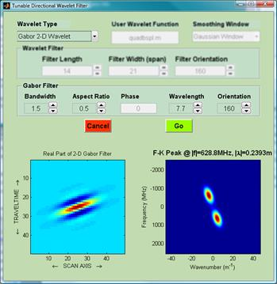
Figure 4.11. GUI to control the parameters of 2-D Gabor
Filter
Once the necessary
definitions and parameters have been set, the GUI displays the 2-D Gabor Filter
(Figure 4.11 bottom-left) and the normalized amplitude of its f-k transform
(Figure 4.11 bottom-right). For a given bandwidth and orientation, the
coordinates of the peaks of the spectral lobes are determined by the wavelength
which thus defines the temporal or spatial scale to be isolated. The width of
the pass-band and the sharpness (roll-off rate) of the spectral lobes are
determined by the bandwidth while the span of the filter (size of the smoothing
window) is determined by the aspect ratio. The smaller the bandwidth is, the
larger the width of the pass-band. For a unity aspect ratio the spectral lobes
are circular. For aspect ratios less than unity they are oblong in the
azimuthal direction. For ratios greater than unity they are oblong in the
radial direction (perpendicularly to the orientation). In consequence, the
combination bandwidth/aspect ratio controls the dilation or contraction of the
filter, hence the amount of information allowed through at the given scale. The
frequency and wavenumber coordinates of the spectral peaks are clearly
displayed above the f-k spectral plot. The Gabor Filter can be tuned at the
desired frequency and/or wavenumber by adjusting (and micro-adjusting) the
wavelength and the orientation. The tuning process is displayed in real time.
Multi-Directional Wavelet Filter
Signal enhancement
and wide-angle-and-scale-dependent information retrieval from 2-D GPR
data with tuneable Directional
Wavelet Filters. A comprehensive presentation of the theory and several examples can be found in Tzanis, 2013 and is also provided in the accompanying
document Directional
Wavelet Filters.pdf.
The user is strongly advised to familiarize with the
concepts presented in the above literature before using the software. The rest
of this section assumes that the reader is familiar both with the
concepts and with the terminology used.
A radargram may
contain reflections from variable-dip reflectors, multiple reflectors with
different dips etc. A single-dip Directional Wavelet Filter will extract only
part of the available dip-dependent information because it is highly selective.
The solution proposed herein for the retrieval of scale-dependent information from
multiple- or variable-dip geometric features borrows insight from the
techniques used in edge detection and entails: i) Application of a
Directional Wavelet Filter rotated to different angles under adaptive control
so that it will remain tuned at a given frequency or wavenumber. This will
yield a series of single-dip dependent outputs. ii) Stacking of the
single-dip outputs in the weighted least-squares sense. The weighting guarantees
that the final output will not be disproportionally dominated by powerful spectral
components and that it will be a faithful representation of the scale-dependent
information contained in the input data. Moreover, stacking will tend to smear
dip-dependent noise features eluding the filter at a given temporal or spatial
scale, further enhancing the S/N ratio. This filtering scheme facilitates the
combination of several partial (same-scale-and-dip-dependent) data subsets
into an image that is scale-dependent but dip-independent over a given arc θ1θΝ..
The application of multi-directional wavelet filters is facilitated with the
GUI of Figure 4.12.
Wavelet Filters: The relevant parameters are selected via the Wavelet Type, User
Defined Wavelet, Smoothing Window,
Length and Width controls, as defined in the1-D Wavelet Filters and 2-D Wavelet Filters subsections of the Directional Wavelet Filter item above.
The definition of filter orientations (azimuths) will be given below. Moreover:
·
Filter length is computed automatically when one of
the F-Tune or K-Tune radio buttons is selected in the Rotation Mode panel (see below). In this case the
Length box is deactivated (as
in Figure 4.12) and its content is irrelevant.
·
Filter length has to be set manually when the Free Rotate radio buttons is pressed in the Rotation Mode panel; this activates the Length box in the Wavelet
Filters panel.
Gabor Filters: The relevant parameters are selected via the Wavelet Type, Wavelength,
Bandwidth and Aspect ratio controls, as defined in the 2-D Gabor Filters subsection of the Directional Wavelet Filter item above.
The definition of the filter orientations will be given below. Moreover:
·
The wavelength is computed automatically when one of
the F-Tune or K-Tune radio buttons is selected in the Rotation Mode panel. In this case the Wavelength box is deactivated (as in Figure 4.12) and its content is irrelevant.
·
The wavelength has to be set manually when the Free Rotate radio buttons is selected in the Rotation Mode panel; this activates the Wavelength editable box in the Gabor Filter panel.
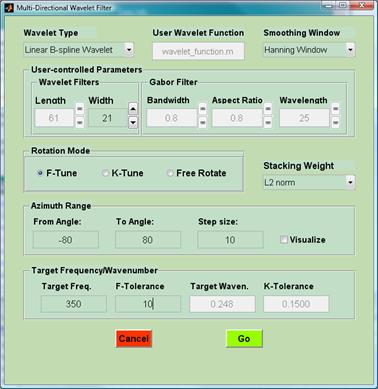
Figure 4.12. GUI to control the parameters of multi-directional
wavelet filtering
The Rotation
Mode panel determines how to perform the tuning.
·
If the F-tune
radio button is selected (default), the tuning will focus on a target
(tuning) frequency set via the Target Freq.
editable box in the Target Frequency/Wavenumber
panel.
·
If the K-tune radio
button is selected, the tuning will focus on the target (tuning) wavenumber
set via the Target Waven. editable
box in the Target Frequency/Wavenumber
panel.
·
If the Free Rotate
radio button is selected, there will be no tuning. Depending on the
choice of Wavelet Type this action
activates the Length editable box or
the Wavelength box and the pertinent
parameter must be set manually. Filters thus defined, will be applied with
fixed parameters along the arc set in the Azimuth
Range panel.
The Stacking
Weight popup menu determines the type of the weight. These are
generally functions of a measure of the energy contained in the output data
normalized by the same measure of the energy contained in the input data. This
measure is expressed by a norm and can be L1
norm (or Manhattan norm), L2
norm (or Euclidean norm) and infinity
norm. It is also possible to obtain straight arithmetic averages of
the outputs at different angles. The default is L2
norm (Euclidean norm).
The Azimuth
Range panel is used to define the range of angles over which to apply directional
wavelet filters. The starting angle (θ1) is set in the From Angle: editable box, the ending angle
(θN) is set in the To
Angle: box and the increment between angles is set in the Step size: box. Zero azimuth (θ =
0) corresponds to the vertical direction, i.e. is normal to the surface
of the Earth and perpendicular to the dip direction. All angles are measured
clockwise and the condition θ1 < θN must
be upheld. By checking the Visualize
box, the user may track the tuning process by means of real time graphical
displays.
The Target
Frequency/Wavenumber panel is used to define the tuning (target)
frequency of wavenumber. The former is set via the Target
Freq. box and the latter via the Target
Waven. box. If f0 is the target frequency, then
the F-Tolerance box is used to
define a tolerance value fT such that any length or
wavelength that tunes the peak to within the tolerance interval [f0
- fT, f0 + fT] is deemed
acceptable. Likewise, if k0 is the target wavenumber, then
the K-Tolerance box is used to set a
tolerance value kT such that any length or wavelength that
tunes the peak o within the tolerance interval [k0 - kT,
k0 + kT] is deemed acceptable.
Curvelet Filter
Signal enhancement
and geometrical information retrieval with an interactive application of the 2nd
Generation Curvelet Transform (CT).
The CT is a multi-scale
and multidirectional expansion that formulates an optimally sparse representation of the input signal
with optimal reconstruction
characteristics. (Candès and Donoho, 2003a; 2003b;
2004; Candès
et al., 2006). A comprehensive review and several examples
can be found in the accompanying document GPR and Curvelets.pdf.
Curvelets are ideally adapted to represent functions with curve-punctuated
smoothness (or intermittent regularity), which are piecewise smooth
with discontinuities (singularities) along a curve of bounded curvature. 2-D
GPR data contain wavefronts that correspond to reflections from structural
inhomogeneities; these are generally curved, relatively smooth in their
longitudinal direction and oscillatory in their transverse direction.
Wavefronts are functions with intermittent regularity and their singularities
correspond to geological inhomogeneities at which waves reflect. Curvelets are
ideally adapted to detect wavefronts at different angles and scales because
aligned curvelets of a given scale, locally correlate with wavefronts of the
same scale.
N.B. matGPR uses the MATLAB implementation of the Fast Discrete Curvelet
Transform (FDCT), developed by E. Candés, L. Demanet and L. Ying and
available as part of the Curvelab software package at http://www.curvelet.org. More precisely, matGPR
uses the routines fdct_wrapping_matlab.m (forward FDCT), ifdct_wrapping_matlab.m
(inverse FDCT) and fdct_wrapping_window.m, all by Laurent Demanet. You need a license
to use Curvelab; for this reason, the matGPR_R3 distribution bundle is supplied
with limited functionality and will refuse any data matrix with size larger
than 218 elements. Please comply by visiting Curvelabs home page
and following the instructions. Once you obtain the license, download and untar
Curvelab, then go to the directory .../CurveLab-2.1.1/fdct_wrapping_matlab
and copy the three files to the directory .../MATGPR_R3/analysis. Then
delete the files fdct_wrapping_matlab.p, ifdct_wrapping_matlab.p
and fdct_wrapping_window.p. You should now be set to enjoy
unlimited use matGPRs Curvelet filtering utility.
Before using the software, you are strongly
advised to familiarize with curvelets, as for example detailed in Candès et al., 2006 (comes with Curvelab) and
in GPR and
Curvelets.pdf. The rest of this section assumes that the reader is familiar
with the concepts used in these references.
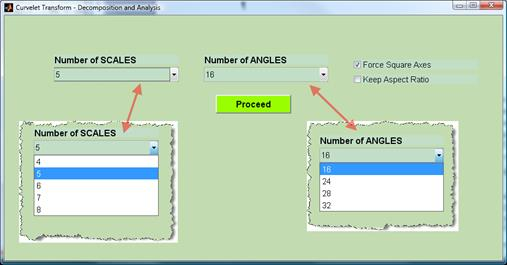
Figure 4.13a. GUI to set up the FDCT.
On
executing a Curvelet Filter request, matGPR inquires for the number of
scales for which to perform the pyramidal decomposition, with j = 1
corresponding to the coarsest-scale inner partition of the Fourier plane. It
also inquires for the number of angles at the second coarser scale (j
= 2), i.e. the first scale at which an angular decomposition is computed, so as
to set up the angular decomposition. The number of angles doubles in every
second scale. The permissible combinations of number of scales and angles
are preset and can be selected via drop menus (Figure 4.13). Because the
complete curvelet decomposition of the input data is displayed and
interactively manipulated, as in Figure 4.14, you may specify how you wish to have
the axes of the Fourier plane drawn. By checking the Force Square Axes box (default), the horizontal axis
(corresponding to wavenumber) and the vertical axis (corresponding to
frequency) will be drawn with equal lengths. By checking the Keep Aspect Ratio box, the lengths of the
horizontal and vertical axis are adjusted according to the horizontal and
vertical dimensions of the data matrix. (N.B. that the lengths of the
axes are drawn according to the dimensions of the data matrix and not according
to units of frequency and wavenumber).
By
left-clicking Proceed, the parameters
are registered, the display changes into that of Figure 4.13b and the program
is ready to compute the curvelet decomposition. This is done by pressing Decompose.
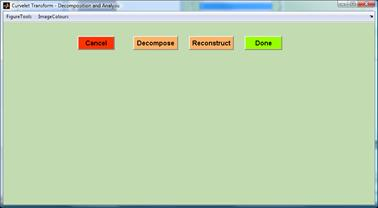
Figure 4.13b. GUI to compute the forward and inverse FDCT.
After the FDCT is
computed, the upper-right diagonal of the pseudo-polar partition of the Fourier
plane is displayed as shown in Figure 4.14 for a 512-by-512 data matrix
decomposed into six scales and 24 angles at the second coarser scale. Each trapezoidal
wedge drawn in Figure 3.4.14 represents the support of a curvelet.
The coarsest scale
of the decomposition is isotropic and corresponds to very large scale features
that do not admit a proper angular decomposition (i.e. description with proper
set of curvelet basis functions. Instead, it comprises an isotropic low-pass
window that is displayed as a rectangle at the centre of the tile. The last
(finest level) scale extracts the highest frequency/ longest wavenumber
content. The design of appropriate curvelet basis functions at this scale
(outermost corona) is not straightforward due to difficulties relating to
issues of over- or under- sampling (Candés et al. 2006). One apparent
solution is to assign wavelets instead of curvelets to the finest scale and
treat it with isotropic high-pass windows, in a manner analogous to the
treatment of the coarsest level scale. This is not consistent with the idea of
directional basis elements at the finest scale, but because GPR data is usually
oversampled, there is little, if any, useful information at the high-end of the
Fourier spectrum which usually comprises noise. In consequence, the
wavelet-based remedy was adopted in matGPR. In Figure 4.14, the finest level
scale (in the form of wavelet coefficients) is displayed separately at the
space that would have been occupied by the lower-left diagonal and illustrates
the associated set of wavelet coefficients
·
Each trapezoidal wedge is associated with one set of
curvelet coefficients. More precisely, the graphical object associated with
each trapezoidal wedge is assigned with the indices of the corresponding
curvelet coefficients. Wedges and coefficients are indexed in a clockwise sense
starting at the top-left corner of the north quadrant.
·
The wedges are set up to function as virtual
switches whose On/Off state is controlled by the screen pointing device
(e.g. the mouse). All the wedges are initially displayed in their On
state, which is indicated by shading. The Off state is indicated by a
blank wedge. Both the coarsest and finest scale graphical objects are also set
to function as virtual switches just like the trapezoidal wedges.
Ø
It is possible to decide which curvelet coefficients to
include (exclude) from a processed (reconstructed) version of the input
data by pointing and clicking inside a wedge or rectangle. This will negate
(reject) the associated coefficients and will toggle its state to Off,
blanking it out (Figure 3.4.14). The negated coefficients may be restored
(accepted) by clicking again inside a blank wedge or rectangle, in which case
the state is reset to On (shaded).
Important
Tip: Sometimes, when the decomposition is very detailed (several scales and
many angles) it is difficult to click inside small sized wedges, especially
those located toward the centre of the Fourier plane. In this case, you can use
the zooming and panning utilities. In order to zoom in, always use the sequence
FigureTools à Zoom to activate the
utility, select the zoom area and finish by FigureTools
à Zoom to deactivate the
utility. If you do not deactivate the utility control does not return
to the switches! The display can be restored by selecting FigureTools à Zoom
out.
In order to pan, use the analogous sequence.
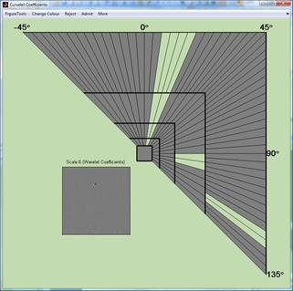
Figure 4.14. Display of the upper-right diagonal (north
and east quadrants) of the pseudo-polar tiling of the Fourier plane for a
512-by-512 data matrix decomposed into six scales and 24 angles at the second
coarser scale (j=2). Each trapezoidal wedge, as well as the rectangles
corresponding to j=1 (central) and j=6 (lower left), is
associated with a set of coefficients and functions as a graphical switch
whose state can be toggled by pointing and clicking. The On state is shaded
and the corresponding coefficients are included in a reconstruction. The Off
state is blank and the corresponding coefficients are excluded from a
reconstruction.
Additional useful information
to guide the analysis can be obtained as follows:
·
Clicking the middle mouse button inside
a wedge causes the program to display the index and central slope of the
wedge in a dedicated message box.
·
Clicking the right mouse button inside a
wedge causes the program to display the effect of the curvelet supported on
this wedge on the data, i.e. the data filtered by this particular curvelet. The
same happens you click inside the isotropic inner and outermost rectangles
(coarsest and finest scale respectively). For example, if the data of Figure
2.1 comprise a 512-by-512 matrix decomposed into 6 scales and 24 angles at the
second coarsest scale, (see Figure 4.14), by right-clicking on wedge No 15 of
the fourth scale the program displays the filtered data:
After
inspection of the output, the figure can be deleted by clicking any
button while the pointer is inside the display window.
In addition to
pointing and clicking on individual wedges, it is possible to toggle the
state of entire scales of angular subsets of scales with appropriate GUI
controls. These are shown in Figure 4.15 and include:
Figure 4.15. GUIs to manipulate groups of wedges.
·
Rejection or Admission of the entire decomposition,
i.e. all scales and angles, using the Reject à All or Admit à All choice
respectively.
·
Rejection or Admission of entire scales using
the Reject à Scale
#
or Admit à Scale
#
choice respectively.
·
Rejection or Admission of angular subsets of a
scale using the Reject à Range or Admit à Range choice
respectively. This will produce the dialog window in which you need to specify
the SCALE, as well as the starting
angle (in the FROM angle: box) and
the ending angle in the (TO angle:
box) that delimit the arc you want to reject or admit.
·
Rejection or Admission of curvelets inside an area
defined by a rubberband box using the More
à
Reject all in box or More à Admit
all in box choice.
·
Flipping the state of the entire decomposition using the More à Flip
All
choice, as in the example below.
·
Flipping the state of an angular subset of a scale using the More à Flip
Range choice and a dialogue box as above to specify the range.
 A partial or whole reconstruction of the data can be
computed at any time during the editing of the decomposition by pressing Reconstruct in the Curvelet
Transform Decomposition and Analysis window (e.g. Figure 4.16).
A partial or whole reconstruction of the data can be
computed at any time during the editing of the decomposition by pressing Reconstruct in the Curvelet
Transform Decomposition and Analysis window (e.g. Figure 4.16).
 Pressing Done
in the Curvelet Transform Decomposition and
Analysis window finalizes the analysis and returns control to the
matGPR GUI.
Pressing Done
in the Curvelet Transform Decomposition and
Analysis window finalizes the analysis and returns control to the
matGPR GUI.
Figure 4.16.
Partial reconstruction of the data of Figure 3.2.1 assuming a 512-by-512 image
size decomposed into 6 scales with 24 angles at the 2nd coarsest
scale. The reconstruction focuses on the down-dipping components and was based
on the subset of curvelets belonging to scales 3, 4 and 5 and angles between 30° and 70°.
Tau-P Filtering
Filter data by
modelling and muting noise in the t-p domain. The GPR section data is transformed to t-p domain by direct
integration in the t-x domain. A
model of the data (noise) is extracted by muting t-p domain
contributions without (within) a pass (stop) polygonal zone and inverse
transforming to the t-x domain also
by direct integration. The resulting model (residuals) is taken to comprise the
filtered data section. A necessary condition for t-p filtering is that
traces are equally spaced.
There are only two
options, zone-pass or zone-stop filtering and choice is made by means of a menu
(Figure 4.17 left). If you select Zone pass, the t-p domain
contributions in and on the sides of the zone will be
retained and outside the zone will be muted. If you select Zone stop, the contributions outside the zone will be retained and
those inside and on the sides of the zone will be muted.
Figure 4.17. The menus of available t-p filtering
operations (left) and methods of
defining the polygonal pass / stop zone (right).
As with F-K
filtering, there are two methods of defining the pass / stop zone (Figure 4.17
right):
 The coordinates (vertices) of the zone are imported
from an ASCII disk file. This means that you have accurately pre-defined the pass or stop region and
allows for repeated applications of the t-p filter on multiple
data sets. The structure of the ASCII file is very simple: No header; two
columns of floats, the first column
being the p-coordinates and the second column being the t--coordinates
of
the t-p domain.
The coordinates (vertices) of the zone are imported
from an ASCII disk file. This means that you have accurately pre-defined the pass or stop region and
allows for repeated applications of the t-p filter on multiple
data sets. The structure of the ASCII file is very simple: No header; two
columns of floats, the first column
being the p-coordinates and the second column being the t--coordinates
of
the t-p domain.
 The coordinates of the polygonal area are set
interactively on-screen, exactly as with F-K filtering. matGPR generates and
displays the t-p panel. Then, it issues a short help message which
remains visible for the duration of the procedure and displays a cross-hair
cursor. Set the vertices of the polygon defining the pass / stop zone by
clicking the left mouse button at the
desired position of the t-p panel. To facilitate positioning, the cursor
co-ordinates are displayed at the bottom of the figure. The zone vertices are
marked with a star and the enclosed area is outlined with a transparent rubber
band to facilitate the design process (see Figure 4.6 and 4.19 Left). If you
set a vertex incorrectly, you can undo it by clicking the middle mouse button. There's no backward limit to this type of undo
operations, other than the size of the zone. To finish, the right button must be clicked after the last vertex has been set. matGPR
will then ask whether the polygon was defined to your satisfaction. If not, the
zone is erased and the process starts over.
The coordinates of the polygonal area are set
interactively on-screen, exactly as with F-K filtering. matGPR generates and
displays the t-p panel. Then, it issues a short help message which
remains visible for the duration of the procedure and displays a cross-hair
cursor. Set the vertices of the polygon defining the pass / stop zone by
clicking the left mouse button at the
desired position of the t-p panel. To facilitate positioning, the cursor
co-ordinates are displayed at the bottom of the figure. The zone vertices are
marked with a star and the enclosed area is outlined with a transparent rubber
band to facilitate the design process (see Figure 4.6 and 4.19 Left). If you
set a vertex incorrectly, you can undo it by clicking the middle mouse button. There's no backward limit to this type of undo
operations, other than the size of the zone. To finish, the right button must be clicked after the last vertex has been set. matGPR
will then ask whether the polygon was defined to your satisfaction. If not, the
zone is erased and the process starts over.
Figure 4.18 shows a
GPR section measured above fragmented and carstified limestone, with
intercalations of argillaceous materials. The data suffer from a considerable
degree of ringing, presumably due to antenna coupling with a quite moist
weathering layer.
After t-p transformation
(Figure 4.19-left), the ringing is modelled in the t-p domain by muting
all contributions outside the shaded
pass-zone shown in Figure 4.19-left. Upon inverse t-p transformation, matGPR
displays the model (in this case the ringing effects) and the residuals after scaling
the model with respect to the input data (Figure 4.19-right). By means of the ACTIONS menu, (Figure 4.19-right), the user may
experiment with scaled and unscaled versions of the model and the residuals,
and, decide whether to keep the model, or the residuals as the output of the t-p filtering process.
Figure 4.20
displays the residuals, which in this
case were chosen to be the filtered output data (OPD). It is apparent that in
this case, the output data would be virtually free of ringing.
Figure 4.18. GPR section above karstified
limestone. The data are infested with intense ringing effects.
Figure 4.19. Left: The t-p panel of the data of Figure 4.18. The shaded
area represents the pass-zone containing the main contributions of the ringing
effects. Right: A model of the
ringing computed by inverse transforming the t-p elements within the
pass zone (top) and the residuals after subtracting the model from the data
(bottom).
Figure 4.20. The residuals of the t-p filtering process
(Figure 4.18 Right) are free of ringing.
F-X Deconvolution.
Noise attenuation
after Canales (1984) and Gulunay (1986). For each frequency, a Wiener auto-regressive filter of unity prediction
distance in space is used to predict the next sample. At the end of the process
the data is mapped back to T-X domain. The deconvolution altogether needs four
parameters: prediction operator length (prediction filter length), percent
prewhitening and minimum and maximum frequencies to process. The length of the
filter wavelet (filter length) normally can be kept relatively small and cannot
exceed 1/2 of the scan axis length. The default minimum and maximum frequencies
are the fundamental and Nyquist respectively, but they can be changed to
correspond to the usefl range of frequencies in the data set. Filter length is
given either in space units (m) or in number of samples, depending on the
user's preference (see below). If you choose Samples in the box to the left,
then you should enter number of samples in the box to the right (which appears
immediately afterwards). Conversely, if you choose metres in the box to the left,
you should enter values in metres in the other box.
·
Credits for the F-X deconvolution routine go to M.D.
Sacchi, University of Alberta. Only minor changes have been introduced by A.
Tzanis, for compliance with matGPR. For more information about the F-X routine
and many other seismic processing programs, please look at http://www-geo.phys.ualberta.ca/saig/SeismicLab

Predictive Deconvolution
The objective of
predictive deconvolution is the suppression of multiples or reverberations. The
desired output is a time advanced (lagged) version of the input signal. The
deconvolution altogether needs three parameters: The prediction distance (lag),
the length of the filter wavelet and percent prewhitening). The length of the
filter wavelet (filter length) normally can be kept relatively small and cannot
exceed 1/2 of the trace length. The lag must be smaller than filter length. To suppress
multiples choose a lag corresponding to the two-way-traveltime of the multiple,
to suppress reverberations choose a small lag corresponding to the duration of
the primary reverberation. Filter length and lag can be given either in time units
(ns) or in number of samples, depending on the user's preference (see below).
If you choose Samples
in the left box, then you should enter number of samples in the box to the
right (appearing immediately afterwards). Conversely, if you choose ns
(nanoseconds) in the left box, you should enter values in nanoseconds in the
right box.
Sparse Deconvolution.
Given a source wavelet f, sparse-spike deconvolution attempts
to find an Earth reflectivity series r
consistent with the observed data series y
in the sense y = f·r, but one which
exhibits the minimum possible number
of reflectors. By design, sparse deconvolution emphasizes the larger amplitudes
and more important events in the observed data while suppressing small
amplitude or spurious events and noise. The requirement of minimum structure
(minimum number of reflectors) leads to an ill-posed least-squares problem,
which is solved with regularization. matGPR implements sparse deconvolution as
a method of extracting the more significant information from the data,
utilizing the procedure described by Sacchi (1997).
This author approaches the problem from a robust statistical/ influence
function point of view, regularizing the solution with an iterative reweighted
least-squares technique. Accordingly, matGPR requires the following information
(Figure 4.21):
1. The Regularization factor (m). The default
value is 0.1, which would normally return a moderately sparse reflectivity
series. The larger m is, the sparser
the reflectivity and the higher the emphasis put on large amplitude events. The
optimal value of m cannot be known
beforehand and should be determined empirically.
2. The maximum number of iterations. The default value
is 20, which appears to more than suffice in most cases.
3. The source wavelet f. You may choose between the derivative of the Blackman Harris
window (value = 1) and the Ricker wavelet (value = 2). The default is 1
(Blackman Harris window), which comprises a sharp pulse and returns a somewhat
sharper reflectivity series than the Ricker wavelet.
4. The central frequency in MHz, of the antenna with
which the data were taken. This is used in the computation of the source
wavelet.

Figure
4.21.
The information required as input for sparse-spike deconvolution.
matGPR displays the
model of the data, (Figure 4.22, top), in which the more significant events
have been retained, and the recovered reflectivity series r (Figure 4.22, bottom). By means of the ACTIONS pull-down menu,
(Figure 4.14), you may decide whether to use the model, or the reflectivity as
the output of the sparse deconvolution operation.
Figure 4.22. The data model (top) and
reflectivity (bottom) recovered by the sparse deconvolution method.
·
Credits for the sparse deconvolution routine go to
M.D. Sacchi, University of Alberta. Only minor changes have been effected by A.
Tzanis, for compliance with matGPR. For more information about the sparse
deconvolution routine and many other seismic processing programs, please look
at http://www-geo.phys.ualberta.ca/saig/SeismicLab
5. Interpretation
I: The "Imaging" menu
Fit Diffraction Hyperbola
A simple
approximation to the problem of fitting a diffraction front hyperbola, as it is
based on the premise of non-dispersive propagation in a uniform halfspace and
deals only with point diffractors, or finite sized targets of circular cross section
(quasi-cylinders and quasi-spheres). matGPR generates the Fit Diffraction
Hyperbola figure, which displays the IPD structure in Image Display mode (Figure 5.1). Parameters involved in the
fitting process are the halfspace
velocity, the radius of the
target and the coordinates of its centre (depth
and location on the scan line). The
parameters can be changed interactively,
1.
By means of slider UI controls, as shown at the bottom
of Figure 3.5.1. The upper and lower limits of the sliders and the minimum and
maximum slider steps are determined automatically. The calculated hyperbola is
plotted on the data and the quality of fitting is determined by the eye,
(depends on the experience of the user).
2.
By pointing the cursor at the apex of a diffraction hyperbola and clicking the middle
mouse button to begin the fitting process, then using the scroll-wheel of the
mouse to automatically change velocity and target depth until the hyperbola is
fitted. This is a fast, easy and accurate method, but only for MATLAB releases featuring the scroll-wheel callback
function (WindowScrollWheelFcn).
3.
Using both methods (1) and (2) above.
When finished, by
clicking DONE, you cause the current estimate of the halfspace velocity to
become a global runtime variable and be accessible by other imaging and
interpretation functions (it is also displayed on the information window of the
matGPR GUI). The figure can be fully manipulated using the FigureTools and ImageColours
menus
Figure 5.1. Interactive fitting
of a diffraction front hyperbola. A uniform half-space is assumed and the model
parameters are changed with the slider rules.
Static Correction
Apply topographic
corrections to zero-offset GPR data. The routine initializes a GUI, in which
you specify the necessary parameters: Velocity of the subweathering
layer to be used for correction, the sense of the correction (up or down) and
the elevation datum in which to refer the reduced GPR section (see Figure 5.2
for details). The elevation data necessary for the corrections must have been prepared
with the Make X Y Z procedure. By pressing Go the routine performs the topographic reduction.
Figure 5.2. The GUI to define parameters
necessary for topographic corrections.
1-D velocity model
This is a utility
to import, or introduce and export 1-D (layered) velocity models for use with
1-D migration routines. At this stage development, the migration routines will only
implement the real (non-dispersive) term of the phase velocity. The models can
be imported from a disk file or may be given interactively by means of a dialog
box. The format of the disk file is very simple. The first line is the number
of layers NLAY, including the basal half space. This is followed by NLAY pairs
of velocities (m/ns) and thicknesses (in m), one per line as in the following
table:
|
Nlay |
|
|
Velocity of layer 1 |
Thickness of layer 1 |
|
Velocity of layer 2 |
Thickness of layer 2 |
|
... |
... |
|
Velocity of layer NLAY-1 |
Thickness of layer NLAY-1; |
|
Velocity of basal halfspace |
0 |
 The thickness of
the basal halfspace is always equal to zero!
The thickness of
the basal halfspace is always equal to zero!
 A uniform halfspace
is introduced as a 1-LAYER velocity structure with a thickness equal to zero.
A uniform halfspace
is introduced as a 1-LAYER velocity structure with a thickness equal to zero.
 Basic error
checking (e.g. for velocities exceeding the speed of light in free space) is
done before the routine returns.
Basic error
checking (e.g. for velocities exceeding the speed of light in free space) is
done before the routine returns.
1-D F-K Migration
This is a compact
implementation of Stolt's (1978) F-K migration for uniform
or layered velocity structures. The program uses Stolt stretching to accommodate
non-uniform (layered) velocity structures, while the actual migration code was
built with tips from Jon Claerbout (1996, pp 53-57).
However, this is a much more compact, robust and fully vectorized code, fast
enough to outperform some compiled Fortran or C implementations of Stolt
migration. The required input velocity model must have been prepared with 1-D velocity model. User intervention is
not required during execution of the program.
1-D Phase-shift migration
This is a compact
implementation of Gazdag's phase-shift migration
for uniform or layered velocity structures. The required input velocity model
must have been prepared with 1-D velocity model.
N.B. 1: Inasmuch as Phase-shifting migration requires
a good deal of number crunching, you might consider using the alternative phase-shift migration
routine gazdagmig.m in the folder analysis/alternative/gazdagmig+migrate.f90/,
together with the program migrate.f90, which only takes a FORTRAN 90
compiler to make work. In this way, you may exploit the advantage of speed afforded
by compiled programs.
N.B. 2: The Fortran-90 MEX-file implementation of the migration
routines is no longer supported.
Time-to-Depth Conversion
This utility
migrates (remaps) a GPR section from travel time vs. distance to depth vs.
distance, assuming a uniform or layered velocity structure. The required 1-D
velocity model must have been prepared with 1-D velocity model.
The user may choose
to make a Straight
conversion, in which case the effect topography if any is omitted, or to Add Topography,
in which case the effect of topography is included. In straight conversions
the program:
1. Computes a time
vs depth function t(z) from the
velocity vs. depth function v(t).
2. Inverts t(z)
to z(t) by
inverse linear interpolation.
3. Remaps z(t)
to depth z and, based on this
mapping,
4. Remaps E(t)
> E(z),
where E stands for a GPR trace (A-scan).
Figure 5.3. Example of straight
time-to-depth conversion
Time-to-depth
conversions with topography comprise
two stages. The first stage is a straight conversion. In the second stage,
the elevation (of each trace) is added to the depth vector (of each trace) and
the resulting data set is resampled so as to generate a topography-adjusted
radargram, which always has a larger
number of rows than the original (unconverted) radargram. The elevation of each
trace must have been prepared with
the Make XYZ utility.
Figure 5.4. Time-to-depth
conversion of Fig. 5.3 adjusted for topography (Add Topography option).
2-D velocity model
Import or build a
2-D velocity structure for Split-step and PSPI migrations. matGPR will ask
whether you wish to import, or create the velocity model. In the former case,
the velocity model will be read from a binary disk file, where it was stored
during some previous session. In the latter case, the program will ask you to import
(from a disk file) a synthetic structural model prepared by Build 2-D Model and to confirm the antenna central frequency and the depth step size to be used for integration.
Then, it will generate the corresponding velocity model, optionally saving it
to a binary disk file (recommended).
The velocity
structure is returned in a three-element cell array {V0 Q
fc}containing:
1)
The non-dispersive term V0 of the phase velocity model, with values expressed in
m/ns. This is computed after Bano (1996).
2)
The quality factor Q
of the model.
3)
The central frequency fc of the antenna (a scalar).
·
The cell array v2d is introduced to matGPR as a field
of the VS structure.
The antenna frequency and the quality factor are useful in incorporating
the frequency dependence of the phase velocity (dispersion) in 2-D Split-step
Fourier depth migration (and future implementations of other 2-D spectral
domain migration / modelling methods), also in the sense of Bano
(1996), who has shown that the phase velocity V(w) are given by the
product of a non-dispersive term V0
and a power-law term P(w), as follows:
.
with K being the reference relative
permittivity and m the magnetic permeability.
The dimensions of the velocity matrix and the Q matrix are the same as the dimensions of the GPR section. Along
with the velocity model, the program generates and stores the array of
z-coordinate axis of the velocity model and the depth stepping size to be used for
migration.
The structure of
the velocity model is [iz][ix], i.e. the x-direction is the fastest (MATLAB
default). Such a structure is more convenient for the downward continuation
type migration algorithm than using z as fastest dimension.
2-D Phase-shift + Interpolation
Migration
This is a fully vectorized MATLAB implementation of Gazdag and Sguazzerro's (1984) phase-shift plus
interpolation migration for zero-offset data, with lateral velocity variation.
The velocity model used for migration must have been prepared by 2-D velocity model and comprises the
{1 x 3} cell array VS.v2d = {V0 Q fc}.
However, the PSPI migration routine only uses the non-dispersive term V0 = VS.v2d {1} because at
present, theres no accurate method to interpolate Q in the sense required by the Gazdag and Sguazzero algorithm. Accordingly,
this implementation of PSPI migration should rather be used when you are
confident that theres no significant frequency dependence in the data.
Otherwise, the 2-D Split-step Fourier
Migration scheme should be preferred. At any rate, the velocity model V0 must have the same number of columns as in the GPR
section. The PSPI migration algorithm used in matGPR implements large-scale
vectorization and is rather fast. Typical execution times for a 512 × 512
job with 3 reference velocities in a Windows Vista system with Intel� Core Duo
CPU @ 2.4GHz is 52-53 seconds.
2-D Split-step Fourier Migration
A vectorized implementation of the
algorithm by Stoffa et al. (1990). In addition, the
algorithm has been augmented to account for the frequency dependence of the
phase velocity (dispersion), depending on the form of the variable conveying
the velocity model used for migration. The default for matGPR is to include
dispersion. The velocity model must have been prepared by 2-D velocity model In the augmented Spilt-step
algorithm realized in matGPR, both the layer reference velocities (vertically) and
the layer perturbation velocities (horizontally) are reduced for their frequency
dependence.
Credits: Some programming tips were
taken from a split-step migration routine by G.F. Margrave, CREWES Project, U.
of Calgary, 1996.
Simple Velocity
Calculator.
Utility to
calculate EM field velocities in finite media. The function enquires the
nominal frequency of the GPR antenna, the resistivity, relative dielectric
constant and relative permeability of the medium (below left) and calculates
the non-dispersive term of the phase velocity, with values expressed in m/ns,
and the quality factor, both after Bano (1996). For
additional details see item 2-D velocity
model.
6. Interpretation
II: The "Modelling" menu
Build 2-D Model
matGPR offers a GUI
utility (the Model Builder) to
construct 2-D models for processing with the Split-step and Phase-shift plus
Interpolation migration methods, as well as for forward modelling. At this
stage of development, the model comprises an ensemble of objects with polygonal
or circular cross-sections. The objects can be overlapping and the order in
which they are introduced in the model determines the way in which they will
appear in the velocity model (or whether they will appear at all). The program employs
a front to back hierarchy: foreground objects will appear whole in the model;
background objects will not appear at all if they are totally obscured or will
appear partially if they are partially obscured (their visible portion).
Therefore, the objects added later to the model take precedence over the
objects introduced earlier! The (Model) Builder also provides for the graphical
editing of object shape and properties (inserting, relocating or removing vertices
and changing EM properties, with unlimited levels of undo). The following few
paragraphs will provide a basic description of the utility.
Figure 6.1 shows
the window and menus of the Model Builder. Particular to the Builder are the Data and
Actions
menus. The Data
menu helps you initialize the program and import or export models. Its function
and options are straightforward and there will be no time or space wasted to
their detailed description. The Actions menu provides access to the main
collection of tools by which you can build and edit a model and will be given
due consideration.
Figure
6.1. The Model Builder window and its menus
1. Creating
a new model.
On selecting Data à New Model, the Builder displays a
dialog box, in which you will define the size and extent of the model. Required
parameters are the left and right limits in the horizontal direction and the
vertical (depth) extent of the model. The model is always assumed to begin at
the surface (z=0). In order to create a velocity model for 2-D migrations, i.e.
one that will be processed by 2-D velocity model,
make absolutely sure that the
horizontal extent (x-axis) of the model matches the horizontal extent (scan axis) of the GPR section.
Once the size of
the model is defined, the Builder automatically creates and paints a background
structure with dimensions equal to the size of the model and enquires for the
antenna central frequency, the background resistivity, relative dielectric
constant and relative magnetic permeability (Figure 6.2 left). Given these
figures, it calculates the phase velocity for the central frequency and asks
for your approval (Figure 6.2 right). If you press No, the Builder asks for new
electric and magnetic properties and so on... Cancel
discards the current background and the procedure starts over. If you
press Yes the background is accepted as the first object in the list. The builder is now ready to accept new
structural objects (bodies). As mentioned previously, the model comprises an
ensemble of bodies with polygonal or circular cross-sections.
Figure
6.2. Left: The
dialog box enquiring the EM properties of the new object. Right: The Builder always
asks for confirmation of the body's properties
1.1. Inserting polygonal objects (bodies): There
are three ways to enter a polygonal object, selectable from the Actions à Input
Mode à
menu:
Use Fingers to
insert polygonal object via dialogue boxes: The Builder will first ask for
the number of vertices in the body. Then, it will loop through the number of
vertices, asking for the vertex coordinates, one at a time. You should enter
(x, z) pairs of coordinates as per Figure 6.6. When the coordinates have been
entered, the Builder will paint the body and will enquire its properties, also
by means of dialog boxes as per Figures 6.2 and 6.4. Accepting the body will
cause the Builder to ask for an ID tag by which it will identify the body
(Figure 6.5). The tag is then painted on the centre of gravity of the polygonal
body.
Use Pointer to
insert polygonal graphically: The Builder displays a crosshair cursor; set the
vertices of the polygonal body by clicking the left mouse button on the desired coordinates. To facilitate
positioning, the cursor coordinates are displayed at the bottom of the figure.
Figure 3.6.3. Use
Pointer for inserting a trench in the background structure.
The vertices are marked with a star and the area they enclose is
outlined with a transparent rubber band to enhance visualization and facilitate
the design process (Figure 6.3). This is particularly helpful when inserting
complex shapes. If you set a vertex incorrectly, you can undo it by clicking
the middle mouse button, whereupon
the vertex, the line to the vertex and the rubber band to the vertex are
erased. There's no backward limit to this type of undo operations, other than
the size of the zone. To finish, click the right
mouse button after the last vertex
has been set. The Builder will now paint the body and will ask its properties,
as per Figure 6.4. Accepting the body (by pressing Yes in the quest dialog) will
cause the Builder to ask for an ID tag by which it will identify the body (as
per Figure 6.5). The tag is then painted on the centre of gravity of the polygonal
shape.
Figure 6.4. The trench is painted on the model and the properties of the filling
material are now enquired.
Figure 6.5. The Trench is now given a
name (Tag).
From File to read the coordinates (vertices) from an ASCII file. This file has very simple
structure: No header; two columns of floats, the first column being the horizontal
(x) coordinate and the second
column being the vertical (z) coordinate.
After importing the polygon, the Builder paints the body and asks for its
properties with the procedure described above.
1.2. Inserting circular objects
(bodies): There are two ways
to enter a circular object, selectable from the Actions à Input
Mode à
menu:
Use Fingers: The Builder will
ask you to type the coordinates of the centre of the circular body and the
length of its radius in a dialog box as shown below. In this here example, a
water pipe of diameter 0.25m is specified and put in the trench of Figure 6.4.
The result is shown in Figure 6.6.
Use Pointer: The Builder
displays a crosshair cursor. You are required to point and left-click, first at
the coordinates of the centre and then at a distance equal to the radius
from the centre. To facilitate positioning, the cursor coordinates are
displayed at the bottom of the figure and an animated line connects the centre
with the current position of the cursor. Note that this input method is not
recommended when precise placement of small objects is required.
When the location
and size of the circular object have been set, the Builder calculates a
polygonal approximation to the circumference, paints it on the model enquires
its properties, also by means of dialog boxes as per Figures 6.2 and 6.4.
Accepting the body and defining its ID tag will complete the process. Figure
6.6 shows a model comprising a trench dug in the background, with a water
pipe located at (7, 2.5) metres, and a metal pipe at (13, 2) metres, both
parallel to the strike of the trench.
Figure 6.6. The final model of the trench and two pipes
1.3.
Deleting an object: A body can be removed from the model through the Actions à Undo Shape à
choice. The Builder will then display a drop menu
above the top left corner of the model axes, in which you can identify a body
by its tag and remove it.
2. Editing a model.
The Model Builder
allows extensive editing and modification of the model. This includes both the
geometry and the properties of the constituent bodies.
2.1 Changing EM properties. The
EM properties of any body can be changed through the Actions à Review EM
Properties à
menu item. The
Builder will then display a drop menu above the top left corner of the model
axes, in which you can identify a body by its tag and select it. The Builder
projects the current body properties in a dialog box, as per Figure 6.2.left,
and asks for the new properties, calculates the phase velocity for the central
frequency and asks for your approval (as in Figure 6.2 right). If you press Yes the new properties
are accepted for the body. If you press No, the Builder asks for new
electric and magnetic properties and so on... Cancel discards the procedure and
returns the program to the idle state.
Figure 6.8. Select a body in
the drop menu to change its EM properties.
2.2.
Changing model geometry. The geometry of the
constituent bodies can be changed through the menu choices Actions à Move
Vertex / Remove Vertex / Insert Vertex.
Relocate a vertex: First
select the vertex by pointing on the vertex and clicking any button. If youre
in Use Fingers or From File input mode, the Builder will ask for its new
location by displaying the following dialog box
Figure 6.9
If youre in Use Pointer input mode you
must relocate the vertex by pointing and clicking on its new location. The
cursor coordinates displayed at the bottom of the model figure assist you to
point as accurately as possible, however, this relocationg method is not
recommended when precise positioning is required.
Remove a vertex simply by pointing
on it and clicking any mouse button.
Insert a
new vertex: First you must define, by pointing and clicking, the two vertices bracketing the new vertex, (equivalently the side of the polygon to be
split by the new vertex). The builder will remind you this by issuing a help
message. Then, if youre in Use Fingers or From File input mode, the
Builder will display the dialog box of Figure 6.9 asking for the location of
the new vertex. If youre in Use Pointer input mode, you should insert
the new vertex by pointing and clicking on its desired location. The cursor
coordinates displayed at the bottom of the model figure assist you to point as
accurately as possible, but this method of inserting vertices is not
recommended when precise positioning is required.
2.3. Undoing changes to the model
geometry. Use the Actions à Undo
Changes menu choice to reverse any modifications you have made in the geometry
of the bodies. The number of undo operations is not limited but is also not
indefinite: the backup register is reset every
time theres a major change in the model, i.e. when a new object (body) is
inserted or removed. You must finish undoing geometry changes before such an action, or they will
become permanent. It is a good idea to consider doing geometry changes after
laying out the basic structural elements of the model.
2.4. Recolouring the model. The
Builder assigns colours to bodies randomly.
Sometimes the resulting coloration is difficult to read, or even aesthetically
offensive. Use the menu choice Actions à Recolor to
change the scheme to something more acceptable.
2.5. Utilities. Some
utilities useful in editing and illustrating the model are provided with menu
choices Actions
à Marks / Tags / EM Properties.
·
You can show or hide the markers demarcating the
vertices of the bodies.
·
You can show / hide the tags or toggle them with the
corresponding EM properties
·
You can show / hide the EM properties or toggle them
with the corresponding tags
For example, Figure
6.10 illustrates the trench and pipes model of Figure 3.6.6 without markers,
and Figure 6.11 the same model without markers but with the EM properties shown
in the place of tags.
Figure 6.10. The
trench and two pipes model of Figure 6.6 without vertex markers.
Figure 6.11. The trench and two pipes
model of Figure 6.6 without vertex markers, and with its
EM properties shown in the place of tags
3. The structure of the Model File.
The Builder saves the model
for later access by itself, get2dvelocity.m
and splitstep2dmodel.m, as a free
format ASCII file (the model file),
with the following structure:
|
Line |
Model Parameter |
Size and description |
|
1 |
antenna |
float,
antenna frequency. |
|
2 |
Xmin
Xmax Zmin Zmax |
float,
horizontal and vertical extent of the model. |
|
3 |
nbody |
int,
number of bodies in the model. |
|
4 |
tag |
string,
Tag of 1st body. |
|
5 |
nv,
K, Q, mu, rho |
int
+ 4 x float. Respectively are: |
|
|
|
a)
The # vertices in 1st body, |
|
|
|
b)
its relative dielectric constant, |
|
|
|
c)
its quality factor, |
|
|
|
d) its
relative magnetic permeability, |
|
|
|
e)
its resistivity |
|
6 |
x(1) z(1) |
float,
float: coordinates of the first vertex |
|
7 |
x(2) z(2) |
float,
float: coordinates of the second vertex |
|
|
... ... |
... |
|
nv |
x(nv) z(nv) |
float,
float: coordinates of the last vertex |
|
nv+1 |
Tag |
string,
Tag of the 2nd body. |
|
nv+2 |
nv,
K, Q, mu, rho |
int
+ 4 x float: Respectively # of |
|
|
|
vertices,
relative dielectric constant, |
|
|
|
quality
factor, relative permeability and |
|
|
|
resistivity
of the 2nd body |
|
nv+3 |
x(1)
z(1) |
float,
float: coordinates of the first |
|
|
|
vertex
of the 2nd body |
|
|
.... and so on |
|
For example, the background
and the trench of the model in Figure 6.7 would be written as:
500.000 antenna
0.000 20.000 0.000 10.000
Xmin Xmax
Zmin Zmax
2 nbody
Background tag
4 9.000 125.170476 1.000 1000.000 nv, K, Q, mu, rho
0.000 0.000 x(1) z(1)
20.000 0.000 x(2) z(2)
20.000 10.000 x(3) z(3)
0.000 10.000 x(4) z(4)
Trench tag
4 4.500000 625.852380 1.000 10000.000
nv, K, Q, mu, rho
2.015625 0.012500 x(1) z(1)
8.046875 4.512500 x(2) z(2)
12.015625 4.512500 x(3) z(3)
18.015625 0.000 x(4) z(4)
Split-step 2-D Modelling
Generate synthetic
GPR sections with the method of Bitri and Grandjean
(1998). This program imports (from disk file) a synthetic structural model
prepared by function Build 2-D Model and
generates matrices of the relative dielectric constant, magnetic permeability
and quality factor structures. These are passed to a routine file that computes
the corresponding velocity structure after Bano (1996), and
hence the forward model.
The program will first ask you
to specify a model file. It will import the model and based on the range of velocities
it will calculate from the EM properties of its elements, it will compute and
suggest a low (Small), Medium and high resolution (Large) grid for the
synthetic radargram (Figure 6.13.left). It will also offer you the choice of
customizing the synthetic radargram for particular requirements (e.g. simulation
of observed data).
Experience shows that the high
resolution synthetic is not necessarily the best choice, as it always comes at
the expense of computing time. It does, however, exhibit the least amount of artefacts
and aliasing. The low resolution synthetic is computed quickly and is often
acceptable, but depending on the model, it occasionally exhibits artefacts and
aliasing. It is quite alright for the fast assessment of your data and/or interpretation.
The medium resolution synthetic is often a good compromise. However, it should
be noted that the dimension of the traveltime axis often tends to be
overestimated and may be safely reduced (through customization), saving a lot
of storage space and computing time. At any rate, you shouldnt rely
exclusively on the programs suggestions and it usually pays to make a few experiments
to determine the optimal parameters before setting out to work.
If you choose to customize the
grid, the program responds with a dialog box as per Figure 6.12.right. The
program always suggests the use of the Medium Resolution dimensions but this is
only the dummy default. You should specify the desired dimension of the scan
axis (nx), depth axis (nz) and time axis (nt), as well as the sampling rate
(dt). For data simulation exercises, when dt, nx and nt are fixed, it may take
a few experiments to determine the optimal dimension of the depth axis (nz),
i.e. the optimal depth stepping size to be used in the calculations.
Figure 6.12. The dialog boxes produced by the matGPR Split-step forward modelling
routine
The computations
are carried out with fully vectorized code that executes rather fast, almost
comparably to FORTRAN serial code. Accordingly, the support of FORTRAN
MEX-files has been discontinued as of Release 3 of matGPR. However, if you
still want to use Fortran, , e.g. for very large jobs, you may onsider using
the alternative modelling routine splitstep2dmodel.m in the folder analysis/alternative/ Splitstep_model+radar2d4.f90/, together with the
program radar2d4.f90, which only needs a
FORTRAN 90 compiler to make it work.
FDTD 2-D Modelling.
Generate synthetic
GPR sections with the TM-mode, Finite Difference, time-domain method of Irving and Knight (2006). This program
imports (from disk file) a synthetic structural model prepared by Build 2-D Model and requests that you confirm or
change the central frequency of the probing antenna.
Then, it computes minimum
non-dispersive velocity in model (Bano, 1996), and uses it
to construct an initial discretization of the model with the approximations
where Fc is the central frequency, vmin is the minimum velocity, dz is the depth spacing, dx
is the horizontal spacing and dt is
the sampling rate.
·
Use of vmin
ensures adequate discretization of the high velocity areas of the model, where
the wave is propagating fast and higher resolution is required in order to
model it.
Following
discretization, the model properties are displayed as images of the relative
dielectric constant, conductivity, relative magnetic permeability and velocity
grids (Figure 6.13).
Figure 6.13.
Based on the
initial discretization, matGPR computes maximum permissible values for dx and dz and requests that you specify these parameters. By default, it
suggests values close to the maximum permissible. It also requests the initial
location of the source and trace (source) spacing along the scan axis (Figure
6.14-left). You should note that the term maximum permissible refers to the
values below which aliasing effects should not appear. The program will work
with grid and time spacing > maximum but aliases are to be expected!

Figure 6.14. Left:
dialogue box to specify the discretization parameters. Right: Dialogue
box to specify the sampling interval and total 2-way traveltime
Also based on the
initial discretization, matGPR computes maximum permissible values for dt and the total length of the
traveltime vector and requests that you specify these parameters (Figure
6.14-right). As well, the program suggests values close to the maximum
permissible.
§ The final model
grids for the FDTD simulation are constructed with the final values of dx and dz.
The program offers
the possibility to:
·
Control the size of the output (Write sample to the output every # iterations). Default value is 1.
·
View the simulation process in real time, i.e. view
the simulated Ey wavefield
as it propagates through the model (default = 1, i.e. view in real time).
In the latter case,
you must specify:
·
How frequently to update the simulation (Plot every # iterations). Default is Nplot = 50.
·
The contrast (colour saturation) by which to
accentuate the wavefield characteristics. Default = 0.05.
·
It is also possible to make AVI movies of the
simulation. To do this, you should enter 1 in the Make Movie dialogue (default = 0, i.e. no movie)
In order to make a
movie, you need to specify:
·
The AVI file name (the default is work/Ey_wavefiled.avi)
·
the compression method (default is 1 º Cinepak,
otherwise 0, i.e. no compression)
·
The number of frames per second (default = 2) and,
·
The quality of the compression (default = 80).
If real time viewing of the
simulation is selected, the progress is shown displayed as per Figure 6.15,
which is updated every Nplot
iterations (real time graphic display).
Figure 6.15. The progress of the
simulation, i.e. the propagation of the Ey wavefield in the model can be graphically
displayed in real time.
If real time plots are not desired, matGPR displays the progress in a
wait bar which is continuously updated with time-to-completion information.
Additional
Notes:
The FDTD solution
of the forward problem can be quite slow,
especially when large models and high frequencies are involved. In the latter
case, the size of the problem may overflow the memory allocatable by MATLAB.
Normal sized problems may take several hours, even days to complete and it is
advisable to run a trial simulations (e.g. with a very small number of source
locations) before committing your system to heavy number crunching. The size of
the model is very important in this respect and it is always recommended to
scale it down with increasing frequency.
7.
Interpretation III: The "3-D Utilities" menu
Load 3-D data.
Import a 3-D data
volume previously created by selecting Create
3-D Data and saved to disk file.
Create 3-D Data.
Generate a data
volume from 2-D GPR profiles for 3-D visualization. The program assumes that
the 3-D GPR survey has been conducted in a local co-ordinate system with the
X-axis pointing to the right and the Z-axis pointing down. In this system, the
radargrams (GPR profiles) can have any shape, length or orientation with
respect to the axes. Moreover:
·
The input profiles need not have the same trace
spacings or be equally spaced in any direction. The vertical axis can be either
time or depth. The data need not have the same traveltime vectors, or sampling
rates, or depth vectors, or depth spacings.
·
Input data is acceptable only in the
matGPR-specific MGP and MAT formats.
·
X-, Y- and Z- coordinates of all traces in all
profiles must have been assigned prior to the generation of the volume,
otherwise the process will abort (see Make XYZ item of
the Basic Handling menu).
Figure
7.1.
The GUI to assemble files for 3-D data volume generation
The general procedure is as follows. GPR data files
(GPR profiles) are read in. For each file, traces that fall within a
two-dimensional horizontal search window around a volume cell are transformed
(e.g. converted to absolute values or instantaneous amplitudes) and stacked
together. After all the data files have been processed, the final volume cell
value is calculated by averaging all values added to it.
On selecting 3-D Utilities à
Create 3-D Data, matGPR generates the GUI of Figure 7.1 which is similar
in layout and function to the Concatenate
Sections window of the Data menu to
assemble the GPR data files and take the necessary parameters. This can be done
either by typing full path names, or by using the file browser. To assemble the
files press the Browse/Add button to invoke
the file browser and select multiple
files using the Cntrl and Shift keys as per Figure 7.2. Files can be taken out of the list by selecting
them individually and pressing the Remove from list button.
Figure
7.2.
Multiple file selection.
·
It is necessary to specify the
horizontal spacings of the 3-D grid (volume) in the X- and Y-
directions by typing the spacings (in data units) in the editable boxes located
above the file list.
·
Occasionally, it is convenient to measure in a system
in a right-handed coordinate system in which the Y-axis points to the
right (for instance when measuring in a rectangular field with profiles
parallel to the smaller dimension). You can change the handedness of the
coordinate system, i.e. make it compatible with left-handed geographical
systems in which the X-axis point to the right by checking the Flip axes: box this interchanges (flips) the
X and Y axes.
·
As mentioned above, the volume is generated by
stacking traces. It is possible to generate different types of data volumes and
slices by applying different transformations to the input traces. This is controlled
by the options of the Transformation
panel. Thus, it is possible to create slices of:
Ø
Absolute trace values, by pressing the ABS button (default).
Ø
Squared trace values, by pressing SQRT.
Ø
Log-absolute trace values by pressing LOG.
Ø
Instantaneous trace amplitude, by pressing INST.
Ø
Instantaneous trace power, by pressing POW.
Ø
Untransformed stacked traces by pressing NONE.
The GO button starts the volume generation process. The procedure is as follows:
Import GPR profiles and store in temporary work arrays
For all profiles
If necessary, homogenize sampling rates or depth
spacings by interpolation.
Equate the lengths of traveltime or depth vectors by
trimming or padding with zeros.
Initialize the XYZ grid (volume) with the size of Z being equal to the
size of the homogenized traces.
For every GPR profile,
For every X in X-Y grid,
For every Y in X-Y grid,
For every trace in GPR profile,
If the X and Y locations of a trace are within an X-Y
grid cell,
Transform
the trace if necessary
Stack
the trace along the Z dimension of the XYZ grid
Compute averages of the stacked traces.
If one or more 2-D
radargrams have different sampling rates or depth spacings, then the medians of
all the sampling rates, or trace spacings, or depth spacings are set to be the
respective unique common parameter of the data ensemble and volume, and the radargrams
are automatically resampled. Finally, if one or more radargrams have different
traveltime vectors, or depth vectors, or scan-axis lengths, the user is asked
to decide the respective dimension of the volume, with dialogues as per Figure
7.3. Thus, either the longer dimensions are trimmed to the shortest dimension
in the radargram ensemble, or the shorter dimensions are zero-padded to the
longest dimension in the ensemble.
Figure 7.3. If one or more
radargrams have different traveltime vectors, or depth vectors, or scan-axis
lengths, the user is asked to decide the respective dimension of the final data
volume.
GPR-Slice
Generates
a 3-D volume of GPR data and enables its visualization in the form of opaque or
translucent slices (sections). The volume may be exported to the MATLAB
workspace whence it can be saved to a disk file in M3D or ASCII column format, or be
visualized with the Isosurface
Display and 3-D Slices techniques to be
described below.
The method of 3-D
data generation is presented in the Create 3-D Data
item above. However, the volume and the slices are created with the
assistance of the GPR-Slice GUI (Figure 7.4). The left hand side of the GUI is
used to assemble the files necessary to generate the 3-D volume and is
identical in function to the Create
3D Data GUI described above. To assemble the files press the Browse/Add button to invoke the file browser
and select multiple files using the Cntrl and Shift keys. Files can be
taken out of the list by selecting them individually and pressing the Remove from list button. Af before, it necessary to specify the
horizontal spacings of the 3-D grid in the X- and Y- directions
by typing the spacings (data units) in the editable boxes located above the
file list. Likewise, is is possible to toggle the handedness of the coordinate
system by checking the Flip axes:
box. Finally, it is is possible to apply
different transformations to generate different types of data volumes through
the choices of the Transformation panel.
The VOLUME button starts the volume
generation process.
Figure 7.4. The GPR-Slice GUI
with GPR files loaded and ready to create the 3-D data volume.
Once the volume is
created:
·
It can be exported to the MATLAB workspace by pressing
the Save Vol. button and hence be
saved to disk file (in M3D-file or ASCII column format), or visualized with the Isosurface Display and 3-D Slices techniques to be described
below.
·
It can be sliced perpendicular to any one of the three
coordinate axes. Slices are specified by the panels located at the mid-right of
the GUI.
The most common
type of slice would be horizontal layers perpendicular to the vertical
grid direction (Z-axis). A horizontal slice is requested by pressing the Z-slice button; it comprises the average values
of vertical columns located within the layer specified by Min Z and Max Z
and extending between the grid intervals [Min X,
Max X] in the x-direction and [Min
Y, Max Y] in the y-direction. All values are given in data
units. The GUI initializes the editable boxes with the minimum and maximum
values of the three grid axes and you can determine the actual extent of the
slice by changing them to the desired values. The slice will be plotted at the
midpoint of the layer Min Z Max Z.

Likewise, vertical
slices perpendicular to the eastward grid direction can be requested
by pressing the X-slice button. The
bottom panel now changes to accept the X-slice specifications, which
analogously comprise the average values of rows parallel to the y-direction,
located in the x-interval [Min X, Max X] and extending in the vertical
interval (layer) [Min Z, Max Z] and the y-interval [Min Y, Max Y]. Again, all values are given in
data units. The GUI initializes the editable boxes with the minimum and maximum
values of the three grid axes and you can determine the actual extent of the
slice by changing them to the desired values. The slice will be plotted at the
midpoint of the interval Min X Max X.
Finally, vertical
slices perpendicular to the y-direction can be requested by pressing
the Y-slice button. The bottom panel
now changes to accept the Y-slice specifications, which similarly
comprise the average values of rows parallel to the x-direction, located
within the y-interval [Min Y, Max Y]
and extending in the layer [Min Z, Max Z] and the x-interval [Min X, Max X].
Here also, all values are given in data units. The GUI initializes the editable
boxes with the minimum and maximum values of the three grid axes and you can
determine the actual extent of the slice by changing them to the desired
values. The slice will be plotted at the midpoint of the interval Min Y Max
Y.
Prior to
displaying, it is possible to smooth the slice with a robust discretized
smoothing spline technique due to Garcia,
(2010), which can handle missing data and tolerate NaNs or Infs. Press YES to activate smoothing. The method requires
a real positive smoothing parameter (Factor);
this can be very small, e.g. one thousandth, and larger it is, the smoother the
result. For data with outliers you can use a robust computational procedure; to
activate this option check the Robust
box. The default is not-robust smoothing.
Figure 7.5. The GPR-Slice GUI
after the 3-D volume has been created and the parameters for at least one
Z-slice have been specified. The Z-axis
has units of time.
·
Once the parameters have been specified, e.g. Fig. 7.5,
a slice can be created and displayed by pressing the SLICE button (e.g. Fig. 7.6). The last slice created
can be exported to the Matlab workspace by pressing Save
Slice. The slice is saved as a structure CurrentSlice
with elements: x, a 2-D the array of X-coordinates values; y, a
2-D the array of Y-coordinates; .z, a 2-D the array of Z-coordinates; sl,
a 2-D array containing the slice and zlab, the label of the vertical
axis (time or depth).
Basic manipulation
of the display is possible with the controls of the Display
Options panel. You can:
·
Adjust the axes aspect ratio using the controls
of the Aspect Ratio panel. The default
aspect ratio is 1:1:1 and may be changed either by means of the respective X, Y
and Z editable boxes, or by means of the increase
(p) or decrease (q) push buttons.
·
Adjust the range of the display using the controls
of the Axes Limits panel. The limits are
initially determined automatically by MATLAB and can be modified using the
corresponding X, Y and Z editable boxes.
·
Control the Viewer Position. Options available
are:
§ Free interactive
rotation using the mouse. The option is activated/ deactivated with the Free Rotate
checkbox. Details about interactive rotation may be found in MATLAB
documentation.
§ Plan view of
Z-slices pressing the View X-Y button.
§ Profile view of
X-slices pressing the View X-Z button
§ Profile view of
Y-slices pressing the View Y-Z button
·
Display several slices together. The default state
of the Overlay checkbox is not
checked. Every new slice will replace the precious one. By changing the state
to checked, every new slice will be stacked on the display together with
previous slices and they all be shown together (e.g. Fig 7.7). Unchecking the
box reverts to the default state new slices replace previous slices.
§ When a slice is
created it is assigned with a tag composed of its orientation (L-, T- or
Z-slice) and the coordinate at which it is plotted. These tags are listed in
the Deleted Slices menu, as in the example
shown below. By selecting the appropriate tag you can delete
the corresponding slice.
·
Display slices with translucence, whether created
in single or overlay mode. To enable translucence, check the box labelled On/Off in the panel labeled Translucence.
To disable, uncheck the box. Once enabled, the degree of transparency may be
changed via the increase (p) or decrease (q) push buttons.
·
Change
Colour Saturation
(contrast) whether in single or overlay mode with an appropriate
slider. In combination with translucence, increasing the contrast allows the
delineation of laterally extended targets.
At any time during
a GPR-Slice session:
·
New GPR files can be added to or removed from the
list.
·
The grid or/and transformation parameters can be
changed and the volume recalculated and exported to the MATLAB workspace.
·
Slices can be added to or removed from the GPR Slice figure and the last slice can be
exported to the MATLAB workspace.
F These operations
can be done in any combination. Of course, some combinations are detrimental,
as for instance overlaying slices with different transformations. This,
however, is up to the user to mind about.
Figure 7.6. The Z-slice created
with the specifications shown in Fig 7.5. It illustrates the outline of buried
ruins.
Figure 7.7. The slice of Figure
7.6 augmented with X- and Y-slices and viewed from a different perspective.
Isosurface
Display.
Enable the
presentation of 3-D data in the form of (isometric) surfaces with equal signal
amplitudes, or less rigorously stated surfaces of equal reflectivity. When invoked, this option will generate and display an
orthographic projection of the isosurface of amplitudes equal to 55% of the maximum
amplitude contained in the 3-D data volume, as per Figures 7.8 and 7.9.
Figure 7.8. Equal instantaneous power display
of three pipes buried at depths of 1.41.8 metres
Figure 7.9. Equal instantaneous
power display of a geological interface.
It will also create
the GUI shown in Figure 7.10 (titled Iso-Surface
Display Controls), which allows you to manipulate and study the isosurface.
Figure 7.10. GUI to control isometric
surface displays of 3-D GPR data volumes.
The controls
include:
1.
Specification of the isosurface value (signal amplitude) using the Iso-Surface Value slider and editable box.
2.
Specification/ change of Viewer Position, either using the Azimuth and Elevation editable boxes, or by free interactive rotation using the
mouse. The latter option is activated/ deactivated with the Free Rotate checkbox; details about interactive rotation may be
found in MATLAB documentation. Notably, either option is simultaneously
available.
3.
Specification/ change of the axes Aspect Ratio. The default
aspect ratio is X:Y:Z = 1:1:10 and changes can be effected either by means of
the respective X, Y and Z editable boxes, or gradually by means of the
respective increase (p) or decrease (q) push buttons (fine
tuning).
4.
Specification/ change of the direction of lighting (Light Position). The light source is
located at infinity (parallel rays) and you may only specify the azimuth and
elevation of the light source using the respective sliders and editable boxes. This
function may be useful in studying the details of the iso-intensity surface.
5.
Change the colour of the iso-surface using the ReColor push button.
3-D Slices.
Enable the
presentation of 3-D data in the form of opaque or translucent slices
(sections). When invoked, this option will generate and display an
orthographic projection of the radargrams in the form of slices (sections) parallel
to the scan-axis (X-axis), as in Figure 7.11. The slices are initially displayed
opaque.
Figure 7.11. Opaque 3-D slices
parallel to the scan axis.
It will also create
the GUI shown in Figure 7.12 (titled 3-D
Display Controls), which allows you to manipulate and study the slices.

Figure 7.12. GUI to control 3-D
slice presentation of GPR data volumes.
The
GUI controls is organized in panels of homologous control groups as follows:
1. Υ-slices panel: This is the
most important group of controls because it determines the number of slices
displayed and their transparency. The number of slices shown is controlled via
a slider and/or an editable box, both labeled Display Y-slices, according to their location in metres, along the
Y-axis. All of the Y-slices, i.e. all the profiles comprising the data volume
are shown by default at program startup and the maximum Y-value is displayed in
the slider and editable box. The slices are arranged from last to first along
the Y-axis. You may decrease the number of slices by moving the slider to the
left (from last to first) and increase by moving it to the right (from first to
last); in this way, you may scan for laterally extended targets through the
data volume. You may also type an exact Y-location to jump to, via the editable
box.
It is also possible
to display the slices with translucence. To enable translucence, check the box
labeled Translucence On/Off. To
disable, uncheck the box. Once enabled, the degree of transparency may be
changed via the increase (p) or decrease (q) push buttons. Figure 7.13
shows the same data as per Figure 7.11, but with translucence. The method by
which to introduce translucence in the display is credited to Conroy
and Radzevicius (2003).
Figure 7.13. The data of Figure
7.8 displayed with translucence.
2. X-Slices and Z-Slices
panels: These controls allow you to insert slices
parallel to the Y-axis (X-slices) or/and (horizontal) slices parallel to the
X-Y (Z-slices). Only a single, opaque X-slice and/or a single, opaque Z-slice
are allowed at a time. The slices are opaque because their main purpose is to
provide a backdrop to facilitate the interpretation of the (translucent)
Y-slices.
The location of X-
and Z- slices can be controlled with sliders and editable boxes. X- and Z-
slices are not displayed at start-up and the respective editable boxes are
labelled Enter X-slice and Enter Y-slice. You may insert
them, either by moving the respective sliders to the appropriate position, or
by directly typing their location in metres (X-slices) and metres or ns
(Z-slices) in the respective editable boxes. Finally, X- and Z- slices can be
removed altogether, with the Clear
X-slice and Clear Z-slice buttons
respectively.
Figure 7.14 shows the same data as per Figure 7.13, but with increased
transparency, an X-slice at 23m along the scan axis (where a buried wall was
detected), and a Z-slice at 38ns along the traveltime axis, where there are
intense reflections from a buried interface.
Figure 7.14. The data of Figures 7.11 and
7.13, with increased transparency and an X-slice and a Y-slice overlaid.
3. Colour Saturation
(contrast) can be varied with an appropriate slider. In combination with translucence,
increasing the contrast allows the delineation of interfaces and laterally
extended targets.
4. Aspect Ratio: The default aspect ratio is X:Y:Z = 1:1:10 and may be
changed either by means of the respective X, Y and Z editable boxes, or
gradually by means of the increase (p) or decrease (q) push buttons (fine
tuning).
5. Viewer Position: The azimuth and elevation of the observer with respect to the
experimental coordinate system can be specified with the respective Azimuth and Elevation sliders and editable boxes. All values must be
given in degrees.
Save 3-D Data.
Export to an
M3D-file, a 3-D data volume previously generated by the Create 3-D Data command..
References
Bano, M., 1996. Constant dielectric losses of
ground-penetrating radar waves, Geophysical
Journal Int., 124, 279-288.
Bitri, A. and Grandjean, G., 1998. Frequency -
wavenumber modelling and migration of 2D GPR data in moderately heterogeneous
dispersive media, Geophysical Prospecting,
46, 287-301.
Canales, L. L., 1984, Random noise reduction: 54th Annual
Internat. Mtg., Soc. Expl. Geophys., Expanded Abstracts, Session:S10.1.
Chopra, S. and Marfurt, K.J., 2007. Volumetric curvature
attributes for fault/fracture characterization, First Break, 25 (7), 35-46;
doi: 10.3997/1365-2397.2007019.
Claerbout, J., 1996, Imaging the Earths Interior, Network
Distribution Version, pp. 50-57 and 222-223; http://sepwww.stanford.edu/sep/prof/index.html.
Conroy,
J. P. and Radzevicius, S. J., 2003. Compact MATLAB code for displaying 3D GPR
data with translucence, Computers and
Geosciences, 29/5, 679-681.
Crochiere, R and Rabiner, L. R., 1983. Multirate Digital Signal Processing,
Englewood Cliffs, NJ: Prentice-Hall, Inc.
Davis, J.L. and Annan
A.P., 1989. Ground-penetrating radar for
high resolution mapping of soil and rock stratigraphy, Geophysical Prospecting, 37, 531-551.
Fukunaga, K., 1990, "Introduction to Statistical Recognition",
Academic Press.
Garcia,
D., 2010. Robust smoothing of gridded
data in one and higher dimensions with missing values, Computational Statistics
and Data Analysis, 54, 1167 1178; DOI:10.1016/j.csda.2009.09.020.
Gazdag, J., 1978. Wave equation
migration with the phase-shift method, Geophysics,
43, 1342-1351.
Gazdag, J. and Sguazzero, P., 1984. Migration of seismic data by phase-shift
plus interpolation, Geophysics, 49,
124-131.
Grandjean, G. and Durand, H., 1999. Radar Unix: a complete
package for GPR data processing, Computers
& Geosciences, 25 141-149.
Gulunay, N., 1986,
FX deconvolution and complex Wiener prediction filter: 56th Annual Internat.
Mtg., Soc. Expl. Geophys., Expanded Abstracts, Session:POS2.10.
Kahaner, D., Moler,
C. and Nash, S., 1989.
Numerical Methods and Software; Prentice Hall.
Karhunen, K., 1946, "Zur Spektraltheorie
Stochastischer Prozesse", Ann. Acad. Sci. Fennicae, 372.
Loeve, M.M., 1955, "Probability Theory", Princeton, N.J.:
VanNostrand.
Roberts, A., 2001. Curvature attributes and
their application to 3D interpreted horizons. First Break, 19 (2), 85100; doi:
10.1046/j.0263-5046.2001.00142.x.
Sacchi, M.D., 1997.
Re-weighting strategies in seismic deconvolution, Geophysical Journal International,
129, 651-656.
Sena, A.R., Stoffa, P.L. and Sen, M. K., 2003.
Split Step Fourier Migration of Ground Penetrating Radar Data: 73th Annual
Internat. Mtg., Soc. Expl. Geophys., Expanded Abstracts, 1023-1026.
Smith, J. O. and Gossett, P., 1984. A flexible
sampling-rate conversion method in Proceedings
of the International Conference on Acoustics, Speech, and Signal Processing
ICASSP-84, Volume II, pp. 19.4.1-19.4.2, New York: IEEE Press. Also, see
expanded tutorial and associated free software at the Digital Audio Resampling Home Page: http://www-ccrma.stanford.edu/~jos/resample/
Stockwell, R. G., Manshinha, L. and Lowe, R. P., 1996. Localization of the complex
spectrum: The S-transform. IEEE
Trans. Signal Proces., 44, 998-1001.
Stoffa, P.L., Fokkema, J.T., de Luna Freire, R.M. and
Kessinger, W.P., 1990. Split-step Fourier migration, Geophysics, 55, 410-421.
Stolt, R.H., 1978. Migration by Fourier Transform, Geophysics, 43, 23-48.
Tzanis, A., 2013. Detection and extraction of
orientation-and-scale-dependent information from two-dimensional GPR data with
tuneable directional wavelet filters, Journal of Applied Geophysics, 89, 48-67.
DOI: 10.1016/j.jappgeo.2012.11.007.
Turner, G. and Siggins, A.F., 1994. Constant Q attenuation of subsurface radar pulses, Geophysics, 59, 410-421.